Chapter 7: Cloud, Edge, Embedded & Future Compute¶
Computing no longer lives only in the box on your desk. This chapter follows compute out into rented cloud servers, serverless functions and the data centres behind them, then down to edge devices, microcontrollers, single-board computers and the chip inside your phone. It ends with what may come next — quantum, neuromorphic and photonic computing — and how to do all of it with less energy.
7.1 Cloud Computing Fundamentals¶
Cloud computing means renting computers, storage and software over the Internet instead of buying and running them yourself. You switch resources on when you need them, switch them off when you don't, and pay only for what you used. The standard definition comes from the US standards agency NIST, in a short 2011 document called SP 800-145.
Who manages what: IaaS vs PaaS vs SaaS
| IaaS | PaaS | SaaS | |
|---|---|---|---|
| Data & user access | You | You | You |
| Application code | You | You | Provider |
| Runtime & middleware | You | Provider | Provider |
| Operating system | You | Provider | Provider |
| Virtualisation | Provider | Provider | Provider |
| Servers, storage, network | Provider | Provider | Provider |
| Buildings & power | Provider | Provider | Provider |
Whatever the service model, your data and user accounts remain your responsibility.
Think of it like…
The cloud is like electricity from the grid: you don't build your own power station, you plug in, use what you need and pay a metered bill.
Real-world example
Tomasz runs GigGate, a fictional ticketing start-up. Most weeks two small virtual servers handle the traffic, but when a famous band's tour goes on sale, demand jumps fifty-fold for one morning. Because GigGate runs in the cloud, an auto-scaling group adds 100 servers within minutes and removes them by lunchtime. The burst costs a few hundred dollars instead of racks of hardware that would sit idle the rest of the year.
How it works¶
- A provider builds huge data centres and groups them into regions, each split into isolated availability zones.
- Virtualisation slices physical servers into virtual machines, containers or functions that customers can rent.
- You request resources yourself through a web console, command-line tool or API — no phone call or purchase order.
- The provider meters usage (per second, per request or per gigabyte) and bills you monthly.
- Responsibility is shared: the provider secures buildings, hardware and hypervisors; you secure your data, accounts and settings.
Who uses it
Developers, DevOps and cloud engineers, solutions architects, data scientists and almost every modern organisation, from start-ups to banks and hospitals, use cloud services every day.
Key takeaway
Memorise NIST's five essential characteristics (on-demand self-service, broad network access, resource pooling, rapid elasticity, measured service), three service models and four deployment models — they appear in almost every cloud exam.
Going deeper
- NIST SP 800-145 is only a few pages long; the international equivalent vocabulary is ISO/IEC 22123. Newer models such as FaaS, CaaS (containers) and DBaaS are industry extensions of NIST's three service models.
- Availability is designed, not bought: providers typically treat one availability zone as a single failure domain, and compute SLAs of 99.99% (about 53 minutes of downtime a year) usually apply only when instances span two or more zones.
- AWS, Azure and Google publish Well-Architected guidance organised into pillars — operational excellence, security, reliability, performance efficiency, cost optimisation and sustainability — which architects use as review checklists.
- Cloud-native teams treat servers as 'cattle, not pets': instances are built from images and infrastructure-as-code, and failed ones are replaced automatically rather than repaired by hand.
- Scaling out (adding more instances) is preferred over scaling up (a bigger instance), because it needs no reboot and also improves resilience; auto-scaling policies typically track a target such as 50-60% average CPU.
- Some services are global rather than regional (identity, DNS, CDN), while data stored in a region normally stays there unless you copy it — important for GDPR and other data-residency rules.
Common mistakes & misconceptions
- Believing the cloud is always cheaper — steady 24/7 workloads can cost more than owned servers; savings come from scaling down and switching off.
- Assuming the provider handles all security — misconfigured storage, weak identities and leaked keys are the customer's responsibility in every model.
- Running everything in one availability zone and calling it highly available — a single zone outage then takes the whole service down.
Try it: List cloud regions and availability zones (read-only commands)¶
# AWS CLI (needs a free account and 'aws configure'; these only read information)
aws ec2 describe-regions --query "Regions[].RegionName" --output table
aws ec2 describe-availability-zones --region eu-west-2 --query "AvailabilityZones[].ZoneName" --output text
# Google Cloud equivalent
gcloud compute regions list
Key chips, architectures, standards, tools & concepts¶
| Name | What it does | Example |
|---|---|---|
| NIST SP 800-145 NIST (US National Institute of Standards and Technology), 2011 · Standard · Current · Beginner |
The classic definition of cloud computing: five essential characteristics, three service models (IaaS, PaaS, SaaS) and four deployment models. | An exam asking which feature lets you add servers in minutes expects NIST's term 'rapid elasticity'. |
| Five essential characteristics NIST SP 800-145 · Concept · Current · Beginner |
On-demand self-service, broad network access, resource pooling, rapid elasticity and measured service — the features that make something genuinely 'cloud'. | A server room where staff email IT and wait a week for a VM lacks self-service and metering, so it is not really a private cloud. |
| IaaS (Infrastructure as a Service) NIST SP 800-145; e.g. Amazon EC2, Azure Virtual Machines, Google Compute Engine · Concept · Current · Beginner |
You rent raw virtual machines, disks and networks; you install and manage the operating system and everything running above it. | A games studio rents 20 Linux VMs and installs, configures and patches its own game-server software on them. |
| PaaS (Platform as a Service) NIST SP 800-145; e.g. Azure App Service, Google App Engine, AWS Elastic Beanstalk · Concept · Current · Beginner |
The provider runs the servers, operating system and language runtime; you simply deploy your application code and data. | A student pushes a Python web app to Azure App Service and never logs into a server or installs a patch. |
| SaaS (Software as a Service) NIST SP 800-145; e.g. Microsoft 365, Google Workspace, Salesforce · Concept · Current · Beginner |
Complete applications delivered over the web; the provider manages everything and you just sign in and use them. | A school uses Google Workspace for email and documents without running a single mail server. |
| FaaS / serverless Industry model, e.g. AWS Lambda, Azure Functions, Cloud Run functions · Concept · Current · Beginner |
You upload small functions that run only when triggered, scale automatically and are billed per request and per millisecond. Newer than NIST's list. | A photo app runs a function to create a thumbnail every time a user uploads a picture. |
| Public cloud NIST deployment model · Concept · Current · Beginner |
Infrastructure owned by a provider and offered to anyone over the Internet, with customers kept separate from each other by software. | A start-up signs up with a card and launches servers on a public cloud within five minutes. |
| Private cloud NIST deployment model; e.g. OpenStack, VMware Cloud Foundation · Concept · Current · Intermediate |
Cloud-style self-service infrastructure used by a single organisation, running on its own premises or hosted for it. | A bank runs OpenStack in its own data centre so teams can self-serve VMs while data stays in-house. |
| Hybrid cloud NIST deployment model; e.g. AWS Outposts, Azure Arc, Google Distributed Cloud · Concept · Current · Intermediate |
A mix of private or on-premises infrastructure and public cloud, connected so workloads and data can move between them. | A hospital keeps patient records on-premises but sends heavy month-end analytics jobs to the public cloud. |
| Multi-cloud Industry practice · Concept · Current · Intermediate |
Using two or more public cloud providers to avoid lock-in, satisfy regulators or pick each provider's strongest services. | A retailer runs its website on AWS but its data warehouse on Google BigQuery. |
| Shared responsibility model Published by AWS, Microsoft and Google · Concept · Current · Beginner |
The provider secures 'the cloud' (buildings, hardware, hypervisor); the customer secures what they put 'in the cloud' (data, identities, configuration). | A storage bucket accidentally left public is the customer's misconfiguration, not the provider's failure. |
| Region All major cloud providers · Concept · Current · Beginner |
A geographic area, such as London or Frankfurt, containing a group of data centres where you choose to run your resources. | A German firm picks the Frankfurt region so its customers' personal data stays inside the EU. |
| Availability zone (AZ) AWS, Azure, Google Cloud (Google calls them zones) · Concept · Current · Beginner |
One or more separate data centres inside a region, with independent power and cooling, linked by fast, low-latency fibre. | Running web servers in three AZs keeps a shop online when one zone suffers a power failure. |
| Elasticity vs scalability General cloud concept · Concept · Current · Beginner |
Scalability is the ability to handle more load; elasticity is growing and shrinking automatically to match demand in near real time. | An auto-scaling group that adds servers at 9 a.m. and removes them at midnight is showing elasticity. |
7.2 Cloud Providers, Hyperscalers & GPU Neoclouds¶
A handful of very large companies, called hyperscalers, run most of the world's public cloud. Amazon Web Services is the biggest, followed by Microsoft Azure and Google Cloud, with Oracle, Alibaba and many smaller providers behind them. A newer group nicknamed 'neoclouds' specialises in renting large numbers of GPUs for artificial intelligence.
Think of it like…
Hyperscalers are like giant supermarkets selling everything under one roof; neoclouds are specialist shops that sell one thing — GPU power — in bulk.
Real-world example
Lumora, a fictional AI start-up, trains its speech model on a GPU neocloud because it can reserve 512 GPUs for three months at a good rate. Its customer app, database and login system live on a hyperscaler, which offers hundreds of managed services. The engineers describe everything in Terraform files, so the same tooling builds resources on either provider.
How it works¶
- Hyperscalers build global networks of regions and offer hundreds of services: compute, storage, databases, networking and AI.
- Many design their own chips — AWS Graviton and Trainium, Google Axion and TPU, Microsoft Cobalt and Maia — to cut cost and power.
- Neoclouds buy large fleets of NVIDIA (and some AMD) GPUs and rent them as ready-networked clusters for AI training and inference.
- Regional and 'sovereign' clouds serve customers who must keep data and control under local laws.
- Tools such as Terraform and Kubernetes help organisations work across more than one provider.
Who uses it
Cloud architects, procurement teams, AI engineers, IT managers and start-up founders compare providers when deciding where to build.
Key takeaway
Learn one hyperscaler deeply first (most job adverts mention AWS or Azure), then map its services to the others — the concepts transfer, only the product names change.
Going deeper
- Analyst firms such as Synergy Research and Gartner track market share; in recent years AWS has remained the largest infrastructure cloud, followed by Microsoft and then Google, with the top three taking well over half of all spending.
- Hyperscalers build their own hardware stacks to cut cost and power: AWS Nitro cards, Graviton and Trainium; Google's Titanium offload system, Axion and TPUs; Microsoft's Azure Boost, Cobalt and Maia.
- Neocloud capacity is sold mostly through multi-month or multi-year reservations; cluster quality depends on InfiniBand or RoCE networking, fast shared storage and burn-in testing, not just GPU count.
- Sovereign offerings range from provider-run EU-only regions (such as the AWS European Sovereign Cloud in Germany) to partner-operated models like Bleu in France and Delos Cloud in Germany built on Microsoft technology.
- Lock-in comes from proprietary managed services (DynamoDB, BigQuery, Cosmos DB), egress fees and 'data gravity'; portable layers such as Kubernetes, PostgreSQL and Terraform/OpenTofu reduce switching costs.
- Choosing a provider means comparing region coverage, service fit, existing licences and identity (e.g. Microsoft 365), discount programmes, support plans and compliance attestations such as ISO/IEC 27001 and SOC 2.
Common mistakes & misconceptions
- Going multi-cloud by default — it doubles skills, tooling and security work; master one provider and add another only for a clear reason.
- Assuming GPU neoclouds offer hyperscaler-style managed services — many provide raw clusters, so you supply orchestration, storage and security.
- Comparing list prices only — discounts, egress, support fees and engineering time often decide the real cost.
Try it: A tiny Terraform file — infrastructure as code works across AWS, Azure and Google Cloud¶
# main.tf
terraform {
required_providers {
aws = { source = "hashicorp/aws" }
}
}
provider "aws" { region = "eu-west-2" }
resource "aws_instance" "web" {
ami = "ami-0123456789abcdef0" # placeholder image ID
instance_type = "t4g.micro"
tags = { Name = "student-demo" }
}
# terraform init && terraform plan # 'plan' only previews; nothing is created
Key chips, architectures, standards, tools & concepts¶
| Name | What it does | Example |
|---|---|---|
| Amazon Web Services (AWS) Amazon, launched 2006 · Service · Current · Beginner |
The largest public cloud by market share, offering hundreds of services from EC2 virtual machines and S3 storage to managed AI. | EC2, S3 and Lambda are the three AWS services almost every beginner cloud course starts with. |
| Microsoft Azure Microsoft, launched 2010 · Service · Current · Beginner |
The second-largest cloud, strong with enterprises that use Windows Server, Microsoft 365 and Entra ID; also hosts huge AI clusters. | A company already on Microsoft 365 often picks Azure so staff sign in everywhere with the same Entra ID accounts. |
| Google Cloud Google (Alphabet), launched 2008 · Service · Current · Beginner |
The third-largest hyperscaler, known for data analytics (BigQuery), managed Kubernetes (GKE) and its own TPU AI accelerators. | A media company analyses billions of viewing events in BigQuery and trains recommendation models on Cloud TPUs. |
| Oracle Cloud Infrastructure (OCI) Oracle · Service · Current · Beginner |
Oracle's cloud, popular for Oracle databases and large GPU clusters for AI, with an Always Free tier useful for learners. | A student hosts a personal website on OCI's Always Free Arm-based virtual machine. |
| Alibaba Cloud Alibaba Group · Service · Current · Beginner |
The largest cloud provider in mainland China and a major player across the Asia-Pacific region. | A European fashion brand selling to Chinese shoppers hosts its online store on Alibaba Cloud to stay close to customers. |
| Hyperscaler Industry term · Concept · Current · Beginner |
A provider operating cloud infrastructure at enormous scale — dozens of regions, millions of servers, custom-designed hardware. | Hyperscalers design their own servers, network switches and even processors rather than buying everything off the shelf. |
| Neocloud Industry term (popular from about 2024) · Concept · Emerging · Intermediate |
A newer cloud provider focused mainly on renting GPU clusters for AI training and inference, often faster to obtain than hyperscaler capacity. | An AI lab rents a 1,024-GPU cluster from a neocloud with high-speed InfiniBand networking already wired and tested. |
| CoreWeave CoreWeave Inc. (listed on Nasdaq in 2025) · Organisation · Current · Intermediate |
A US GPU cloud that grew out of cryptocurrency mining into one of the largest suppliers of NVIDIA GPU capacity to AI labs. | Big AI developers sign multi-year contracts with CoreWeave for thousands of NVIDIA Blackwell GPUs. |
| Nebius, Lambda and Crusoe Independent GPU cloud companies · Organisation · Current · Intermediate |
Other well-known GPU-focused clouds renting on-demand and reserved NVIDIA GPU machines and clusters. (Lambda the company is unrelated to AWS Lambda.) | A university lab rents a single 8-GPU node for a week to fine-tune an open-weight language model. |
| Custom cloud silicon AWS Graviton/Trainium/Inferentia; Google Axion/TPU; Microsoft Cobalt/Maia · Concept · Current · Intermediate |
Processors designed in-house by cloud providers to lower cost and power compared with buying only Intel, AMD or NVIDIA chips. | Moving a web tier from x86 to Arm-based Graviton instances often cuts cost for the same throughput, after a quick recompile. |
| Sovereign cloud Offered by hyperscalers and regional providers · Concept · Emerging · Intermediate |
Cloud services run so that data, operations staff and legal control stay inside one country or region, often for governments. | A European ministry chooses a sovereign cloud offering operated by EU-resident staff under EU law. |
| Developer clouds (DigitalOcean, Hetzner, OVHcloud) DigitalOcean; Hetzner (Germany); OVHcloud (France) · Service · Current · Beginner |
Smaller, simpler and often cheaper providers popular with developers, students and small businesses for VMs and hosting. | A student runs a hobby chatbot on a virtual server costing a few dollars a month. |
| Terraform / OpenTofu HashiCorp (an IBM company); OpenTofu (Linux Foundation) · Tool · Current · Intermediate |
Infrastructure-as-code tools that create cloud resources from text files, working with AWS, Azure, Google Cloud and hundreds of other platforms. | Running 'terraform apply' builds the same network, servers and database every time, avoiding manual clicking mistakes. |
| Equivalent services across providers AWS, Microsoft and Google service comparison charts · Concept · Current · Beginner |
Core services map closely: VMs (EC2, Azure VMs, Compute Engine), object storage (S3, Blob Storage, Cloud Storage), managed Kubernetes (EKS, AKS, GKE). | An engineer who knows AWS Lambda picks up Azure Functions quickly, because triggers, memory settings and per-use billing work in similar ways. |
7.3 Cloud Compute Instances: Choosing a Virtual Machine¶
A cloud instance is a virtual (or sometimes physical) server you rent by the second. Providers sell hundreds of instance types that differ in processor, number of vCPUs, memory, local storage, network speed and whether they include GPUs or AI chips. Choosing well means matching the machine to the job.
Think of it like…
Picking an instance type is like hiring a vehicle: a city car, a van, a lorry or a racing car all drive, but each suits a very different load.
Real-world example
Ana, an engineer at the fictional analytics firm Brightwell, runs a memory-hungry database on an r8g.2xlarge (8 vCPUs, 64 GiB RAM) and the web tier on cheaper c8g.large instances (2 vCPUs, 4 GiB). Before launching a recommendation feature she tests inference on a GPU instance. After a month of monitoring she finds two servers averaging 5% CPU, halves their size and saves about a third of that part of the bill.
How it works¶
- Choose a family by workload: general purpose, compute-optimised, memory-optimised, storage-optimised or accelerated (GPU/AI chip).
- Read the name: on AWS, m8g.xlarge means family M (general), generation 8, 'g' for Graviton, size xlarge (4 vCPUs, 16 GiB).
- Remember a vCPU is a hardware thread: on most x86 instances two vCPUs share a physical core, while on Graviton each vCPU is a full core.
- Pick a size (large, xlarge, 2xlarge...); each step up roughly doubles vCPUs, memory and price.
- Launch from a machine image, attach storage and networking, then monitor real usage and right-size.
Who uses it
Cloud engineers, site reliability engineers, DevOps teams, ML engineers and anyone deploying applications in the cloud choose and tune instance types.
Key takeaway
Learn the suffix letters — 'g' Graviton (Arm), 'i' Intel, 'a' AMD, 'd' local NVMe disk, 'n' extra networking — reading instance names fluently impresses interviewers.
Going deeper
- Each AWS size step doubles resources: large = 2 vCPUs, xlarge = 4, 2xlarge = 8. General-purpose M families give about 4 GiB per vCPU, compute C about 2 GiB and memory-optimised R about 8 GiB.
- Network and disk bandwidth also scale with size: small instances advertise 'up to' burst bandwidth, while larger ones get guaranteed rates; per-instance EBS throughput limits often cap database performance.
- Arm instances (Graviton, Cobalt, Axion) are usually priced lower per vCPU and each vCPU is a full core; providers claim double-digit price-performance gains, but always benchmark your own workload.
- Per-core software licences interact with vCPU counts: features such as AWS 'Optimize CPUs' let you disable SMT or cores to cut Windows Server or database licence costs.
- Instances boot from machine images (AMIs on AWS); teams build 'golden images' with tools such as Packer so every server in a fleet starts identical and patched.
- New accounts have per-family vCPU quotas, especially for GPU instances, so large or accelerated launches often need a quota-increase request days in advance.
Common mistakes & misconceptions
- Treating x86 and Arm vCPU counts as equal — an x86 vCPU is usually one hyper-thread, a Graviton vCPU a whole core.
- Using burstable instances for constant heavy load — once CPU credits run out they throttle to baseline or add 'unlimited' surcharges.
- Keeping important data on instance-store disks — it disappears when the instance stops or its host fails.
- Never revisiting sizes — right-sizing tools such as AWS Compute Optimizer and Azure Advisor regularly find oversized instances.
Try it: Inspect instance and machine types from the command line (read-only)¶
# AWS: vCPUs, memory and CPU architecture of a few instance types
aws ec2 describe-instance-types --instance-types m8g.xlarge m8i.xlarge m8a.xlarge \
--query "InstanceTypes[].[InstanceType,VCpuInfo.DefaultVCpus,MemoryInfo.SizeInMiB,ProcessorInfo.SupportedArchitectures[0]]" \
--output table
# Google Cloud: list Arm-based C4A machine types in one zone
gcloud compute machine-types list --zones=us-central1-a --filter="name~^c4a"
Key chips, architectures, standards, tools & concepts¶
| Name | What it does | Example |
|---|---|---|
| Amazon EC2 Amazon Web Services, launched 2006 · Service · Current · Beginner |
Elastic Compute Cloud: AWS's service for renting virtual and bare-metal servers in hundreds of instance types, billed per second. | A developer launches a t4g.micro EC2 instance to host a small API using new-account free credits. |
| EC2 instance naming Amazon Web Services · Concept · Current · Beginner |
Names read family, generation, attribute letters, then size: c8gn.4xlarge is compute-optimised, 8th generation, Graviton, extra networking, 16 vCPUs. | m8a.large decodes as general purpose, 8th generation, AMD EPYC processor, 2 vCPUs. |
| vCPU (virtual CPU) All cloud providers · Concept · Current · Beginner |
One hardware thread presented to your virtual machine; on most x86 instances two vCPUs are the two threads of one physical core. | A 4-vCPU Intel instance usually gives two physical cores with hyper-threading; a 4-vCPU Graviton instance gives four real cores. |
| Graviton instances (M8g, C8g, R8g, M9g) AWS; Graviton4 and Graviton5 Arm CPUs (Annapurna Labs) · Service · Current · Intermediate |
Arm-based EC2 families: Graviton4 powers 8th-generation M8g, C8g and R8g; the 192-core Graviton5 powers newer M9g instances. | A team rebuilds its Java service as a multi-architecture container image and moves it from x86 to M9g instances. |
| EC2 x86 families (M8i, C8i, M8a) AWS with Intel (Xeon 6) and AMD (5th Gen EPYC 'Turin') · Service · Current · Intermediate |
Eighth-generation x86 instances: 'i' types use custom Intel Xeon 6 chips, 'a' types use AMD EPYC Turin processors. | A company running Windows software that only supports x86 picks m8i instances rather than Arm-based Graviton. |
| Auto Scaling groups / managed instance groups AWS Auto Scaling groups; Azure Virtual Machine Scale Sets; Google managed instance groups · Service · Current · Beginner |
Fleets of identical instances built from a launch template that grow, shrink and replace unhealthy members automatically to match demand. | GigGate's group keeps at least two web servers in two zones and adds more whenever average CPU passes 60%. |
| Bare-metal instance e.g. AWS '.metal' types, Google C4A bare metal, Oracle bare metal · Concept · Current · Intermediate |
Renting an entire physical server with no provider hypervisor between your software and the hardware. | A security vendor that needs to run its own hypervisor rents m7i.metal-24xl servers. |
| Burstable instances AWS T3/T4g; Azure B-series; Google E2 shared-core · Concept · Current · Beginner |
Cheap instances that run at a low baseline and save up CPU credits to burst briefly when busy. | A small blog on a t4g.small idles most of the day and bursts during an occasional traffic spike. |
| AWS accelerated instances (P6, G7e, Trn3, Inf2) AWS with NVIDIA; AWS Trainium and Inferentia · Service · Current · Intermediate |
GPU and AI-chip instances: P6 (NVIDIA Blackwell B200/B300), G7e (RTX PRO 6000 Blackwell), Trn3 (Trainium3) and Inf2 (Inferentia2). | A lab trains on a p6-b200.48xlarge with eight B200 GPUs, then serves the finished model on cheaper inference instances. |
| Block storage vs instance store AWS EBS; Azure Managed Disks; Google Persistent Disk and Hyperdisk; local NVMe · Concept · Current · Intermediate |
Network-attached block volumes survive stops and can be snapshotted; local instance-store NVMe is faster but erased when the instance stops. | A database keeps its data on an EBS gp3 volume, while a cache tier uses the local NVMe disk of a 'd' instance type. |
| Azure VM series Microsoft Azure · Service · Current · Intermediate |
Letters show purpose — D general, E memory, F compute, L storage, M huge memory, N GPU; 'p' means Arm, 'a' AMD, then a version. | Standard_D4ps_v6 is a 4-vCPU general-purpose VM on Arm-based Cobalt 100 with premium SSD support. |
| Cobalt-based Azure VMs (Dpsv6, Epsv6) Microsoft Azure; Cobalt 100 and Cobalt 200 Arm CPUs · Service · Current · Intermediate |
Azure's Arm VMs ('p' in the size name means Arm): v6 sizes such as Dpsv6 and Epsv6 run on Cobalt 100, with Cobalt 200 following. | A SaaS firm moves its Linux microservices to Cobalt-based Dpsv6 VMs for better price-performance. |
| Google Compute Engine machine series Google Cloud · Service · Current · Intermediate |
Families include N4, C4 and C4D (x86), Arm-based C4A and N4A (Google Axion), and accelerator A3, A4 and A4X (NVIDIA GPUs). | c4a-standard-8 means C4A series (Axion Arm CPU), standard memory ratio, 8 vCPUs. |
| Cluster placement groups and EFA AWS (Elastic Fabric Adapter); Azure and Google offer similar HPC networking · Technology · Current · Advanced |
Placement groups pack instances physically close for low latency; EFA adds OS-bypass networking so MPI and NCCL jobs scale across nodes. | A fluid-dynamics team launches 32 hpc7a instances in one cluster placement group with EFA to run an MPI simulation. |
7.4 Cloud Pricing Models & FinOps¶
Cloud providers sell the same server under several price plans. Pay-as-you-go is flexible but most expensive, committing for one or three years earns big discounts, and spare capacity sold as 'spot' is cheapest but can be taken back at short notice. FinOps is the practice of tracking and optimising all this spending as a team.
Three ways to pay for the same server
| On-demand | Commitments (RI / SP / CUD) | Spot | |
|---|---|---|---|
| Typical discount | None (list price) | Up to ~72% (AWS) | Up to ~90% |
| Commitment | None | 1 or 3 years | None |
| Can be taken away? | No | No | Yes, with short notice |
| Best for | Tests, spiky or new apps | Steady 24/7 baseline | Batch, CI, rendering |
| Main risk | Overpaying | Unused commitment | Lost work |
Discount rises as flexibility falls — match each workload to the right column.
Think of it like…
It's like train tickets: pay full price on the day, buy a season ticket for your regular commute, or grab a cheap standby seat you might lose if the train fills up.
Real-world example
Harbourline, a fictional logistics company, runs 40 servers around the clock, so it buys a three-year Savings Plan and roughly halves their cost. Its nightly video-rendering jobs run on Spot instances at up to 90% off, saving progress regularly so a two-minute interruption warning does no harm. A monthly FinOps review then reveals that a quarter of the bill is data leaving the cloud (egress), so the team adds a CDN cache.
How it works¶
- Start on on-demand pricing while you learn your real usage pattern.
- Cover steady 'baseline' usage with Reserved Instances, Savings Plans or committed use discounts (one or three years).
- Run fault-tolerant, interruptible work (batch, CI builds, rendering) on spot capacity.
- Tag every resource with owner, project and environment so costs can be shown back to the right team.
- Review monthly: delete idle resources, right-size, and watch storage and data-transfer (egress) charges.
Who uses it
FinOps analysts, cloud architects, engineering managers and finance teams work together on cloud cost; even junior engineers are expected to be cost-aware.
Key takeaway
Remember the trade-off ladder — flexibility falls and discount rises from on-demand to commitments to spot — and that data into a cloud is usually free but data out (egress) is not.
Going deeper
- AWS advertises up to 72% off with Savings Plans or Reserved Instances and up to 90% with Spot; Google quotes up to 91% for Spot VMs. Real discounts depend on term, payment option and instance family.
- Interruption notice differs: AWS gives a two-minute Spot warning via instance metadata and EventBridge, Azure up to 30 seconds through Scheduled Events, and Google lets you choose no notice or 120 seconds.
- FinOps teams track commitment coverage (share of usage covered) and utilisation (share of the commitment actually used); keep utilisation near 100% first, then raise coverage gradually.
- The FinOps Framework cycles through three phases — Inform (visibility and allocation), Optimize (rates and usage) and Operate (governance and automation) — repeated continuously, not as a one-off project.
- Hidden costs surprise beginners: traffic between zones and regions, NAT gateway processing, public IPv4 addresses (charged by AWS since 2024), forgotten snapshots and verbose log storage.
- FOCUS 1.0 (2024) standardised billing-data columns, and the big providers now offer FOCUS-format exports, making multi-cloud cost dashboards far easier to build.
Common mistakes & misconceptions
- Buying three-year commitments before usage is stable — unused commitments are still billed every hour.
- Running stateful or non-checkpointed jobs on Spot — one interruption can throw away hours of work.
- Estimating only compute — egress and inter-zone data transfer can exceed the cost of the servers.
Try it: Compare yearly cost of one server under three pricing models (illustrative discounts)¶
hourly = 0.20 # example on-demand price in $/hour
hours = 24 * 365
on_demand = hourly * hours
committed = on_demand * (1 - 0.45) # e.g. 45% off for a 3-year commitment
spot = on_demand * (1 - 0.70) # e.g. 70% off, but can be interrupted
for name, cost in [("On-demand", on_demand), ("3-yr commitment", committed), ("Spot", spot)]:
print(f"{name:16} ${cost:,.0f} per year")
Key chips, architectures, standards, tools & concepts¶
| Name | What it does | Example |
|---|---|---|
| On-demand pricing All cloud providers · Concept · Current · Beginner |
Pay per second or hour with no commitment; start and stop at any time. The most flexible option and the highest unit price. | A team testing a new app for two weeks uses on-demand instances and deletes them afterwards. |
| Reserved Instances AWS Reserved Instances; Azure Reservations · Concept · Current · Intermediate |
Commit to a particular instance type in a region for one or three years in exchange for a large discount. | A company reserves ten database servers for three years because it knows they will run constantly. |
| Savings Plans AWS Savings Plans; Azure savings plan for compute · Concept · Current · Intermediate |
Commit to spend a fixed amount per hour on compute for one or three years; the discount applies flexibly across instance types. | A $10-per-hour AWS Compute Savings Plan automatically discounts EC2, Fargate and Lambda usage up to that amount. |
| Committed use discounts (CUDs) Google Cloud · Concept · Current · Intermediate |
Google's one- or three-year commitments to resources or spend, giving discounts on steady workloads. | A game company buys a three-year CUD for the servers running its matchmaking service around the clock. |
| Sustained use discounts Google Cloud (selected VM series) · Concept · Current · Intermediate |
Automatic discounts Google applies to some older VM series that run for a large part of the month — no commitment needed. | An N2 VM left running all month is billed less per hour without the customer doing anything. |
| Spot instances / Spot VMs AWS Spot Instances; Azure Spot VMs; Google Spot VMs · Concept · Current · Intermediate |
Spare capacity sold at deep discounts, often 60-90% off, which the provider can reclaim with only a short warning. | AWS gives a two-minute interruption notice, so a render farm saves its progress and resumes on another instance. |
| Preemptible VMs Google Cloud · Concept · Legacy · Intermediate |
Google's original cheap interruptible VMs, limited to 24 hours' runtime; superseded by Spot VMs, which have no fixed time limit. | Older tutorials using '--preemptible' can switch to '--provisioning-model=SPOT' for the newer option. |
| Egress charges All major cloud providers · Concept · Current · Beginner |
Fees for data leaving a cloud region to the Internet or another provider; incoming data is normally free. | Serving 50 TB of video a month straight from cloud storage can cost thousands of dollars in egress alone. |
| FinOps FinOps Foundation (Linux Foundation) · Concept · Current · Intermediate |
A practice and culture where engineering, finance and business teams share responsibility for cloud spending to get the most value. | Weekly dashboards show each squad its own cloud bill, so teams switch off idle test servers themselves. |
| FinOps Foundation & FOCUS Linux Foundation · Organisation · Current · Intermediate |
The body behind the FinOps Framework, FinOps certifications and FOCUS, an open standard format for cloud billing data. | With FOCUS-formatted exports, a company compares AWS, Azure and Google Cloud costs side by side in one report. |
| Cost allocation tags AWS tags; Azure tags; Google Cloud labels · Concept · Current · Beginner |
Key-value labels such as team=payments or env=prod attached to resources so the bill can be split by owner or project. | Tags reveal that a forgotten GPU instance belonging to the marketing team costs $2,000 a month. |
| Cost dashboards and budget alerts AWS Cost Explorer & Budgets; Azure Cost Management; Google Cloud Billing · Tool · Current · Beginner |
Built-in tools showing spending trends and forecasts, recommending commitments and right-sizing, and emailing alerts when budgets are exceeded. | A student sets a $10 budget alert so an accidentally left-on GPU instance triggers an email the same day. |
| Free tiers and student credits AWS Free Tier; Azure for Students; Google Cloud Free Program · Service · Current · Beginner |
Introductory offers such as trial credits and always-free small services that let learners experiment at little or no cost. | Azure for Students gives eligible students credit without a credit card — but setting a budget alert is still wise. |
| Unit economics FinOps Framework (FinOps Foundation) · Metric · Current · Intermediate |
Cloud cost expressed per unit of business value — per customer, order, transaction or AI token — rather than as a raw monthly total. | Harbourline's bill rose 20%, but its cost per delivered parcel fell 10% because volumes grew faster than spending. |
7.5 Serverless & Managed Compute¶
Serverless means you hand the cloud a piece of code or a container, and it runs it only when needed, scaling from zero to thousands of copies automatically. There are still servers, but you never see, size or patch them. You pay per request and per millisecond of running time, so idle code costs almost nothing.

Think of it like…
Serverless is like using taxis instead of owning a car: you pay only per trip, and someone else worries about maintenance, fuel and parking.
Real-world example
FoodBridge, a fictional charity, built its donation form on a single AWS Lambda function. On a normal day it runs about 2,000 times and costs pennies; on the night of a TV appeal it handles 400,000 requests without anyone touching it. The first request after a quiet spell takes a little longer because of a cold start, which the team happily accepts.
How it works¶
- Upload a function (or container image) and choose its memory size and timeout.
- Connect a trigger: an HTTP request, a file upload, a queue message or a schedule.
- When an event arrives, the platform starts a fresh execution environment (a cold start) or reuses a warm one.
- Your code runs and returns; the platform adds or removes copies automatically, down to zero when idle.
- You are billed for requests and compute time (often in GB-seconds), not for idle servers.
Who uses it
Back-end and full-stack developers, data engineers, automation specialists and start-ups use serverless for APIs, scheduled jobs, event processing and 'glue' code.
Key takeaway
Know the classic interview facts: an AWS Lambda invocation runs for at most 15 minutes with up to 10,240 MB of memory, and cold starts are the main latency trade-off.
Going deeper
- Lambda allocates CPU in proportion to memory: at 1,769 MB a function gets the equivalent of one vCPU, and the 10,240 MB maximum gives up to six — so extra memory can make CPU-bound code cheaper overall.
- Each Lambda execution environment runs in a Firecracker microVM; AWS open-sourced Firecracker in 2018, and it also underpins Fargate.
- Key default limits: 1,000 concurrent executions per region (raisable), 6 MB synchronous request and response payloads, and /tmp storage configurable from 512 MB to 10,240 MB.
- Billing combines a per-request fee with GB-seconds of duration; Arm (Graviton) functions are priced roughly 20% lower per GB-second than x86 ones.
- Serverless containers handle concurrency differently: one Cloud Run instance serves many requests at once (80 by default), whereas a classic Lambda environment handles one request at a time.
- Multi-step workflows are coordinated by orchestrators — AWS Step Functions, Azure Durable Functions and Google Workflows — which add retries, waiting and state between functions.
Common mistakes & misconceptions
- Assuming serverless is always cheaper — at steady high traffic, containers or VMs often cost less; compare at your expected load.
- Keeping state in function memory between calls — environments are recycled without warning; store state in a database, cache or object storage.
- Ignoring downstream limits — thousands of concurrent functions can exhaust database connections; use connection pooling or queues.
- Writing non-idempotent handlers — asynchronous triggers retry failures, so the same event may be processed twice.
Try it: A minimal AWS Lambda handler in Python that you can test locally¶
# handler.py
import json
def lambda_handler(event, context):
params = event.get("queryStringParameters") or {}
name = params.get("name", "student")
return {
"statusCode": 200,
"body": json.dumps({"message": f"Hello, {name}!"})
}
# Run on your own machine - no cloud account needed:
if __name__ == "__main__":
print(lambda_handler({"queryStringParameters": {"name": "Priya"}}, None))
Key chips, architectures, standards, tools & concepts¶
| Name | What it does | Example |
|---|---|---|
| AWS Lambda Amazon Web Services, launched 2014 · Service · Current · Beginner |
The best-known function-as-a-service platform: runs code in many languages for up to 15 minutes per call, billed per request and millisecond. | Uploading an image to S3 triggers a Lambda function that creates a thumbnail and saves it. |
| Cold start All serverless platforms · Concept · Current · Beginner |
Extra delay when the platform must create a new execution environment and load your code before it can handle a request. | A Java function idle overnight takes noticeably longer on its first morning request, then responds in milliseconds. |
| SnapStart and provisioned concurrency Amazon Web Services · Technology · Current · Intermediate |
SnapStart restores functions from a pre-initialised snapshot; provisioned concurrency keeps environments warm. Both reduce cold-start delays. | A banking API enables provisioned concurrency during business hours so customers never wait for a cold start. |
| Lambda Managed Instances & durable functions Amazon Web Services (announced December 2025) · Service · Emerging · Advanced |
Newer Lambda options: run functions on EC2 capacity types you choose, and write checkpointed workflows that can pause for up to a year. | An order workflow waits days for a manager's approval using durable functions without paying for idle compute. |
| AWS Fargate Amazon Web Services · Service · Current · Intermediate |
A serverless engine for containers: run ECS or EKS tasks without provisioning or patching the underlying servers. | A team runs its Dockerised API on ECS with Fargate, simply asking for 0.5 vCPU and 1 GB of memory per task. |
| Google Cloud Run Google Cloud · Service · Current · Beginner |
Runs any stateless container on demand, scales to zero, and supports web services, batch jobs and even GPUs. | A student deploys a Flask app with 'gcloud run deploy' and gets a public HTTPS address in about a minute. |
| Cloud Run functions Google Cloud (formerly Cloud Functions) · Service · Current · Beginner |
Google's function-as-a-service, now built on Cloud Run, triggered by HTTP requests or events from other Google Cloud services. | A function fires whenever a message lands in Pub/Sub and writes a summary row to BigQuery. |
| Azure Functions Microsoft Azure · Service · Current · Beginner |
Microsoft's function-as-a-service, with hosting plans including Flex Consumption (scale to zero, fast scaling) and Premium (always-warm instances). | A retailer's Azure Function processes each new order message arriving on a Service Bus queue. |
| Azure Container Apps Microsoft Azure · Service · Current · Intermediate |
A serverless container platform built on Kubernetes, with scale-to-zero, event-driven scaling (KEDA) and optional serverless GPUs. | A start-up runs its microservices on Container Apps without having to operate a Kubernetes cluster itself. |
| Cloudflare Workers Cloudflare · Service · Current · Intermediate |
Runs JavaScript, TypeScript, Python or WebAssembly in lightweight V8 isolates across hundreds of cities, starting almost instantly. | A news site checks logins and rewrites URLs in a Worker running a few milliseconds from each reader. |
| Event-driven architecture Software design pattern · Architecture · Current · Intermediate |
Designing systems where components react to events — uploads, messages, clicks — instead of constantly polling; a natural fit for serverless. | A 'payment received' event triggers separate functions for the receipt email, stock update and analytics. |
| GB-second Serverless billing unit (AWS, Azure, Google) · Metric · Current · Beginner |
Memory size multiplied by run time: 1 GB of memory running for 1 second equals one GB-second, the basis of function billing. | A 512 MB function running for 200 ms uses 0.1 GB-seconds per call. |
| Knative / OpenFaaS Knative (CNCF); OpenFaaS (OpenFaaS Ltd) · Framework · Current · Advanced |
Open-source projects that add serverless, scale-to-zero behaviour to your own Kubernetes clusters. | A university runs Knative on its private cluster so students learn serverless without a cloud bill. |
| AWS SAM / Serverless Framework Amazon Web Services; Serverless Inc. · Tool · Current · Intermediate |
Tools that define functions, triggers and permissions in YAML and deploy them repeatably; SAM can also test functions locally. | 'sam local invoke' runs a Lambda function on a laptop inside a Docker container for quick testing. |
7.6 Data Centres: Where the Cloud Physically Lives¶
Every cloud service runs inside a data centre: a secure building packed with racks of servers, network switches and storage, plus the power and cooling systems that keep them running day and night. The biggest sites hold hundreds of thousands of servers and use as much electricity as a town. AI is pushing the power drawn by each rack — and total demand — sharply upwards.

Think of it like…
A data centre is like a giant, climate-controlled warehouse whose 'stock' is computers that must never be switched off and must never overheat.
Real-world example
NorthVault, a fictional colocation provider, rents space to 60 customers in one building. A rack of ordinary web servers draws about 8 kW and is cooled with chilled air, but a new customer's AI rack draws 120 kW and needs direct-to-chip liquid cooling. The building uses 10 MW in total to deliver 8 MW to IT equipment, giving a PUE of 1.25.
How it works¶
- Grid power arrives through substations, passes through UPS systems and is backed up by on-site generators.
- Power distribution units feed standard 19-inch racks of servers, measured in rack units (U).
- Servers turn almost all their electricity into heat; air, liquid or immersion cooling carries it away.
- Hot-aisle/cold-aisle layouts and containment stop hot exhaust air mixing with cool supply air.
- Operators monitor power, temperature, efficiency (PUE) and physical security around the clock.
Who uses it
Data centre technicians, facilities, electrical and mechanical engineers, network engineers and cloud infrastructure teams build and run these sites.
Key takeaway
Know the PUE formula — total facility power divided by IT equipment power — where 1.0 would be perfect and efficient modern sites typically run between about 1.1 and 1.4.
Going deeper
- Uptime Institute surveys have shown industry-average PUE hovering around 1.5-1.6 for years, while hyperscalers report fleet averages near 1.1 — the gap is mostly cooling design and scale.
- Uptime Tiers: I = basic capacity, II = redundant components, III = concurrently maintainable (any part can be serviced without shutdown), IV = fault tolerant (survives any single failure automatically).
- Cooling scales with density: contained air works to roughly 20-30 kW per rack, rear-door heat exchangers go further, and direct-to-chip liquid cooling handles 100 kW+ AI racks such as GB200/GB300 NVL72.
- Power distribution is moving to higher voltages: OCP Open Rack uses 48 V busbars, and NVIDIA and partners announced 800 V DC architectures in 2025 for future megawatt-class AI racks.
- Site selection weighs grid capacity, fibre routes, land, water, tax, distance to users and disaster risk; multi-year waits for grid connections are now a major constraint on new AI campuses.
- Physical security is layered — fences, mantraps, badge plus biometric access, CCTV and locked customer cages — and audited under standards such as ISO/IEC 27001 and SOC 2.
Common mistakes & misconceptions
- Thinking PUE measures total efficiency — it ignores how well servers use their power and how clean the electricity is.
- Equating 2N redundancy with 'never fails' — human error and software faults still cause many outages.
- Planning AI racks around legacy air cooling — 100 kW-class racks need liquid cooling and much heavier power feeds.
Try it: Work out PUE and overhead for a small data centre¶
total_facility_kw = 1500 # everything: IT, cooling, lighting, losses
it_load_kw = 1200 # servers, storage, network only
pue = total_facility_kw / it_load_kw
overhead_kw = total_facility_kw - it_load_kw
print(f"PUE = {pue:.2f}")
print(f"Overhead = {overhead_kw} kW ({overhead_kw / it_load_kw:.0%} on top of IT load)")
Key chips, architectures, standards, tools & concepts¶
| Name | What it does | Example |
|---|---|---|
| Rack and rack unit (U) EIA-310 19-inch rack standard · Component · Current · Beginner |
A standard 19-inch-wide frame that holds servers; height is counted in rack units of 1.75 inches (44.45 mm), commonly 42U. | A 2U server takes two rack units, so a 42U rack fits up to 21 of them before switches are added. |
| Hyperscale data centre Built by cloud and Internet giants · Concept · Current · Beginner |
A very large facility, often tens to hundreds of megawatts, built to custom designs by cloud and Internet companies. | A hyperscale campus may contain several buildings holding hundreds of thousands of servers. |
| Colocation (colo) e.g. Equinix, Digital Realty, regional providers · Service · Current · Beginner |
Renting space, power, cooling and network connections in a shared data centre for servers you own. | A trading firm places its servers in the same building as an exchange's systems to shave microseconds off trades. |
| PUE (Power Usage Effectiveness) The Green Grid; ISO/IEC 30134-2 · Metric · Current · Beginner |
Total facility energy divided by IT equipment energy; 1.0 would mean zero overhead for cooling, lighting and power losses. | A site using 12 MW in total for 10 MW of IT has a PUE of 1.2 — a 20% overhead. |
| UPS and backup generators Data centre power infrastructure · Component · Current · Beginner |
Uninterruptible power supplies bridge the seconds after a grid failure until diesel or gas generators start and take over. | During a storm blackout, UPS batteries carry the load for about 30 seconds while generators start and stabilise. |
| Redundancy (N, N+1, 2N) Data centre design practice · Concept · Current · Intermediate |
Installing spare equipment so one failure doesn't stop service: N+1 adds one extra unit, 2N duplicates everything. | If four chillers are needed to cool the building, an N+1 design installs five. |
| Uptime Institute Tier Standard Uptime Institute · Standard · Current · Intermediate |
Rates data centre resilience from Tier I (basic capacity) to Tier IV (fault tolerant) based on power and cooling redundancy. | A Tier III site can take any single component out for maintenance without shutting down IT equipment. |
| Hot aisle / cold aisle containment Data centre airflow design · Concept · Current · Beginner |
Rows of racks face alternate directions so servers draw cold air in at the front and exhaust hot air out the back, with barriers between. | Adding doors and a roof over the cold aisle lets a site raise its cooling temperature and cut chiller energy. |
| Rack power density Measured in kilowatts per rack · Metric · Current · Intermediate |
Electrical power drawn by one rack; traditional racks use roughly 5-15 kW, while modern AI GPU racks can exceed 100 kW. | Moving from 10 kW to 130 kW racks forces a site to redesign both its power feeds and its cooling. |
| Direct-to-chip liquid cooling Used with NVIDIA GB200/GB300 NVL72 and other AI systems · Technology · Current · Intermediate |
Coolant flows through cold plates mounted on CPUs and GPUs, removing heat far more effectively than air. | NVIDIA GB200 NVL72 racks, drawing over 100 kW each, are designed for direct liquid cooling. |
| Immersion cooling Single-phase and two-phase immersion vendors · Technology · Emerging · Intermediate |
Servers are submerged in a non-conductive liquid that absorbs heat directly from every component, removing the need for fans. | A research cluster sits in tanks of dielectric fluid, cooled silently without a single fan. |
| Open Compute Project (OCP) Founded by Facebook (now Meta) in 2011 · Organisation · Current · Intermediate |
An industry community sharing open designs for servers, racks (Open Rack), power and cooling used by hyperscalers. | OCP's Open Rack design uses shared power shelves and busbars instead of a power supply in every server. |
| AI data-centre power demand IEA 'Energy and AI' report (2025) · Concept · Emerging · Intermediate |
The IEA estimated data centres used about 415 TWh in 2024, around 1.5% of world electricity, and could roughly double by 2030. | Power companies in some regions now receive gigawatt-scale connection requests for planned AI campuses. |
| ASHRAE thermal guidelines ASHRAE Technical Committee 9.9 · Standard · Current · Intermediate |
Recommends server inlet air between 18 and 27 °C, letting operators run warmer, more efficient data halls without harming equipment. | Raising cold-aisle temperature from 20 °C to 25 °C lets a site use free outside-air cooling for many more hours a year. |
7.7 Edge Computing¶
Edge computing means doing the processing close to where data is created — in a shop, factory, phone mast or car — instead of sending everything to a distant cloud data centre. This cuts delay, saves network bandwidth and keeps things working when the Internet link is slow or down. The cloud still handles heavy, long-term work; the edge handles quick, local decisions.
Think of it like…
It's like keeping a first-aid kit in every classroom rather than walking every scraped knee to the hospital across town.
Real-world example
ClearSpring, a fictional bottling plant, has 40 cameras checking bottle caps. Streaming all that video to the cloud would need about 2 Gbit/s of upload and add round-trip delay to every decision. Instead a small edge server with a GPU checks each bottle in about 10 ms and rejects faulty ones instantly. Only hourly statistics and rare defect images go to the cloud, where the model is retrained and pushed back to the plant.
How it works¶
- Sensors, cameras and machines produce data at the 'far edge'.
- An edge device or gateway filters, processes or runs AI on that data locally.
- Urgent actions — stop a conveyor, open a gate, brake a robot — are taken immediately on site.
- Summaries, alerts and selected data are sent on to a regional edge site or the central cloud.
- The cloud trains improved models and pushes software updates back out to the whole edge fleet.
Who uses it
IoT engineers, telecoms engineers, retail and manufacturing IT teams, robotics developers and autonomous-vehicle engineers build and run edge systems.
Key takeaway
Explain edge with three Ls: Latency (faster decisions), Load (less data to send over the network) and Locality (data stays on site for privacy or legal reasons).
Going deeper
- Light in optical fibre covers about 200 km per millisecond, so every 1,000 km adds roughly 10 ms of round-trip time before routing and queuing — physics sets a hard floor on cloud latency.
- 5G targets air-interface latency as low as about 1 ms for ultra-reliable low-latency (URLLC) uses, but end-to-end delay depends on where the compute runs — the reason MEC sits inside operator networks.
- Edge fleets need remote lifecycle management: zero-touch provisioning, signed over-the-air updates with rollback, TPM-based attestation and central monitoring of thousands of unstaffed sites.
- Edge AI usually runs quantised INT8 or FP8 models on NPUs or small GPUs; the cloud retrains them and tools such as AWS IoT Greengrass, Azure IoT Operations or KubeEdge roll out new versions.
- Industrial data travels over OPC UA and MQTT, with Modbus still common on older machines; gateways translate these into IP traffic for the edge platform and cloud.
- Edge hardware lives in shops, poles and cabinets, so it needs disk encryption, tamper detection, wide operating temperatures and often fanless, ruggedised designs.
Common mistakes & misconceptions
- Moving everything to the edge — central cloud is cheaper for heavy, non-urgent work; keep only latency- or bandwidth-critical tasks local.
- Assuming constant connectivity — edge applications must keep working offline and synchronise later.
- Underestimating fleet management — thousands of unpatched edge devices become a security and operations burden.
Try it: Why distance matters: the minimum round-trip time through optical fibre¶
SPEED_IN_FIBRE_KM_S = 200_000 # light in fibre travels at roughly two-thirds of its vacuum speed
places = [("Edge box on site", 0.1), ("City edge (MEC)", 20),
("Regional cloud", 500), ("Another continent", 8000)]
for place, km in places:
rtt_ms = 2 * km / SPEED_IN_FIBRE_KM_S * 1000
print(f"{place:18} >= {rtt_ms:6.2f} ms round trip, before any processing")
Key chips, architectures, standards, tools & concepts¶
| Name | What it does | Example |
|---|---|---|
| Edge computing General computing model · Concept · Current · Beginner |
Processing data near its source — devices, on-site servers or nearby telecom sites — rather than only in central cloud data centres. | A supermarket's self-checkout cameras recognise loose fruit on an in-store server instead of in the cloud. |
| Fog computing Term coined by Cisco (2012); OpenFog Consortium · Concept · Legacy · Intermediate |
An intermediate layer of computing between devices and the cloud, such as gateways and local servers; today usually just called edge. | Older IoT textbooks describe factory gateways as 'fog nodes' feeding a central cloud. |
| CDN edge e.g. Cloudflare, Akamai, Amazon CloudFront · Service · Current · Beginner |
Content delivery networks cache websites and video in hundreds of cities and can run code there, serving users from nearby. | A video loads quickly in Sydney because it streams from a CDN cache in Sydney, not the origin in Europe. |
| MEC (Multi-access Edge Computing) ETSI MEC Industry Specification Group · Standard · Current · Intermediate |
Telecom standards for placing computing inside mobile networks, close to 4G/5G base stations, for very low-latency applications. | A stadium uses MEC to stream live multi-angle replays to fans' phones with minimal delay. |
| AWS Wavelength Amazon Web Services with telecom operators · Service · Current · Intermediate |
AWS compute and storage placed inside telecom operators' 5G networks so apps reach nearby mobile users with very low latency. | A cloud-gaming service runs game servers in a Wavelength Zone close to its mobile players. |
| AWS Outposts Amazon Web Services · System · Current · Intermediate |
AWS-owned racks and servers installed in your own building, running EC2 and other AWS services, managed remotely by AWS. | A factory with strict data rules runs EC2 instances on an Outposts rack beside its production line. |
| Azure Local Microsoft (renamed from Azure Stack HCI in 2024) · Software · Current · Intermediate |
Microsoft's hybrid platform for running VMs, containers and selected Azure services on validated hardware at your own sites, managed through Azure Arc. | A retail chain runs point-of-sale and stock apps on a small Azure Local cluster in each store. |
| Google Distributed Cloud Google Cloud · Service · Current · Intermediate |
Google Cloud software and hardware deployed at the edge or in customers' data centres, including fully air-gapped versions. | A government agency runs an air-gapped Google Distributed Cloud deployment for sensitive workloads. |
| IoT gateway Many vendors; Linux-based industrial PCs · System · Current · Beginner |
A device linking local sensors (Modbus, Bluetooth, Zigbee, LoRaWAN) to the network, translating protocols and pre-processing data. | A farm's gateway collects soil-moisture readings over LoRaWAN and uploads hourly averages to the cloud. |
| AWS IoT Greengrass / Azure IoT Edge Amazon Web Services; Microsoft · Software · Current · Intermediate |
Edge runtimes that deploy and manage code, containers and ML models on fleets of devices from the cloud. | A fleet of 500 ticket kiosks receives a new ML model in one Greengrass deployment. |
| NVIDIA Jetson Orin NVIDIA · System · Current · Intermediate |
Edge AI modules from Orin Nano (up to 67 TOPS, 7-25 W) to AGX Orin (up to 275 TOPS) for robots, drones and smart cameras. | A delivery robot uses an Orin Nano module to detect pedestrians and kerbs in real time. |
| NVIDIA Jetson Thor NVIDIA (Blackwell-based, launched 2025) · System · Current · Advanced |
A robotics computer offering up to 2,070 FP4 TFLOPS and 128 GB of memory at 40-130 W, aimed at humanoid and advanced robots. | A humanoid-robot team runs vision, language and motion-planning models together on one Jetson AGX Thor. |
| K3s / KubeEdge K3s (SUSE, CNCF project); KubeEdge (CNCF) · Software · Current · Advanced |
Lightweight Kubernetes distributions and extensions for managing containers on small, remote or intermittently connected devices. | A wind-farm operator runs K3s on rugged mini-PCs inside each turbine tower. |
| Latency budget System design practice · Metric · Current · Intermediate |
The maximum delay an application can tolerate end to end; edge computing exists largely to keep within tight budgets. | A factory robot with a 20 ms safety budget cannot wait for a cloud server hundreds of kilometres away. |
7.8 Embedded Systems & Microcontrollers¶
An embedded system is a small computer hidden inside another product — a washing machine, car, thermostat or fitness band — doing one job reliably. Most are built around a microcontroller (MCU): a single cheap chip containing a processor, memory and input/output pins. They often run for years on very little power, with no screen or keyboard.
Think of it like…
A microcontroller is like a dedicated kitchen timer rather than a smartphone: it does one task, does it reliably, and runs for ages on a small battery.
Real-world example
Leila, a fictional engineering student, builds a plant-watering gadget. An ESP32-C6 reads a soil-moisture sensor through its analogue input, switches a small pump through a GPIO pin and a transistor, and sends readings over Wi-Fi to her phone. Because the chip spends most of its time in deep sleep, waking once an hour, its batteries last for months.
How it works¶
- Write firmware in C/C++ (or MicroPython or Rust) on a PC and compile it for the MCU's core, often Arm Cortex-M or RISC-V.
- Flash the program into the chip's on-board flash memory over USB or a debug probe (SWD/JTAG).
- At power-up the MCU runs your code directly — a bare-metal loop or tasks under a real-time OS (RTOS).
- Peripherals connect to the world: GPIO pins, analogue inputs, timers/PWM and buses such as I2C, SPI and UART.
- Sleep modes and interrupts let the chip wake only when something happens, saving battery.
Who uses it
Embedded software and firmware engineers, electronics designers, IoT, automotive and medical-device engineers, and hobbyist makers work with microcontrollers.
Key takeaway
Be ready to compare I2C (two shared wires, addressed devices, slower), SPI (four wires, fast, a chip-select per device) and UART (two wires, point-to-point) — a classic embedded interview question.
Going deeper
- Bus numbers to know: I2C runs at 100 kHz (standard), 400 kHz (fast) or 1 MHz (fast-mode plus) with 7-bit addresses; SPI commonly runs at tens of MHz; UART is often 115,200 baud with 8N1 framing.
- Memory is small and split: code runs from flash and variables live in SRAM. An RP2350 has 520 KB of SRAM, while a small Cortex-M0+ part may have only 8-32 KB.
- Cortex-M cores enter an interrupt handler in about a dozen clock cycles, with the NVIC managing priorities — this predictable latency is why MCUs suit real-time control.
- Battery life ≈ battery capacity ÷ average current; with active current in milliamps and deep sleep in microamps, the fraction of time awake (duty cycle) dominates the result.
- Industry adds standards: IEC 61508 and ISO 26262 for functional safety, Arm TrustZone-M and secure boot for IoT security, and the EU Cyber Resilience Act for connected products sold in Europe.
- Embedded Rust is growing: hardware-abstraction crates for STM32, nRF and RP chips and the async Embassy framework give memory safety without a garbage collector.
- Real-time operating systems such as FreeRTOS and Zephyr are covered in the operating-systems chapter; the design decision here is whether your timing and task count justify one at all.
Common mistakes & misconceptions
- Doing heavy work inside interrupt handlers — keep ISRs short, set a flag or queue data, and process it in the main loop.
- Connecting 5 V signals to 3.3 V pins — many modern MCUs are not 5 V tolerant; use level shifters.
- Busy-waiting with delay() in battery devices — sleep and wake on timers or interrupts instead.
- Forgetting pull-up resistors on I2C lines and buttons — floating inputs give random readings.
Try it: Blink — the 'Hello, world!' of embedded systems (Arduino IDE)¶
void setup() {
pinMode(LED_BUILTIN, OUTPUT); // make the on-board LED pin an output
}
void loop() {
digitalWrite(LED_BUILTIN, HIGH); // LED on
delay(500); // wait 500 ms
digitalWrite(LED_BUILTIN, LOW); // LED off
delay(500);
}
Key chips, architectures, standards, tools & concepts¶
| Name | What it does | Example |
|---|---|---|
| Microcontroller (MCU) Many vendors: STMicroelectronics, NXP, Microchip, Espressif, Nordic, Renesas · Processor · Current · Beginner |
One chip with a CPU core (usually 32-bit, tens to hundreds of MHz), kilobytes-to-megabytes of flash and SRAM, plus timers, ADCs and serial peripherals. | A TV remote's MCU sleeps until a button is pressed, sends an infrared code, then sleeps again. |
| Arm Cortex-M Arm · Architecture · Current · Intermediate |
The most widely used family of 32-bit MCU cores, from tiny Cortex-M0+ through M33 (with TrustZone) to M55/M85 with vector maths for AI. | Most STM32, Nordic nRF and Raspberry Pi RP-series chips are built around Cortex-M cores. |
| Arduino UNO R4 Arduino (Renesas RA4M1 microcontroller) · System · Current · Beginner |
The current classic Arduino board, using a 48 MHz Arm Cortex-M4 MCU; the WiFi version adds an ESP32-S3 for wireless. | A school electronics club teaches its first sensor projects on UNO R4 Minima boards in the Arduino IDE. |
| Arduino UNO Q Arduino (acquired by Qualcomm, announced October 2025) · System · Emerging · Intermediate |
A hybrid board pairing a Qualcomm Dragonwing processor running Debian Linux with an STM32U585 microcontroller for real-time control. | A maker runs a camera AI model on the Linux side while the MCU side drives motors with precise timing. |
| ESP32 family Espressif Systems · Processor · Current · Beginner |
Low-cost Wi-Fi/Bluetooth MCUs; newer RISC-V models include ESP32-C6 (Wi-Fi 6, Thread/Zigbee), dual-band ESP32-C5 and high-performance, wireless-free ESP32-P4. | Smart plugs and DIY home-automation sensors often use ESP32-C3 or C6 chips running ESPHome or ESP-IDF firmware. |
| STM32 STMicroelectronics · Processor · Current · Intermediate |
A huge Arm Cortex-M family, from ultra-low-power STM32U to fast STM32H7 and the STM32N6 with an on-chip neural processing unit. | A drone flight controller uses an STM32H7 to read gyroscopes and update motor speeds thousands of times per second. |
| Nordic nRF52 / nRF54 Nordic Semiconductor · Processor · Current · Intermediate |
Bluetooth Low Energy-focused MCUs; the newer nRF54L and nRF54H series add performance and efficiency for wearables and IoT. | Fitness trackers and wireless keyboards often use an nRF52840 for long battery life over Bluetooth LE. |
| RP2040 / RP2350 Raspberry Pi Ltd · Processor · Current · Beginner |
Raspberry Pi's own MCUs; RP2350 offers two Arm Cortex-M33 or two Hazard3 RISC-V cores, chosen at boot, plus programmable I/O (PIO). | A hobbyist uses the RP2350's PIO blocks to drive a strip of addressable LEDs with precise timing. |
| GPIO General-purpose input/output (all MCUs) · Interface · Current · Beginner |
Pins that software can set high or low, or read, to drive LEDs and relays or detect buttons and switches. | Setting GPIO 15 high sounds a buzzer; reading GPIO 14 tells the firmware a door has opened. |
| I2C, SPI and UART I2C (Philips, now NXP); SPI (Motorola); UART (classic serial) · Interface · Current · Beginner |
Common serial links: I2C uses two shared wires with addresses, SPI four fast wires, UART simple point-to-point serial. | A weather station reads its temperature sensor over I2C, writes to an SD card via SPI and logs to a PC over UART. |
| Bare metal vs RTOS Embedded software design · Concept · Current · Intermediate |
Bare-metal firmware runs one main loop directly on the hardware; a real-time OS adds tasks, priorities and predictable timing. | A blinking toy runs bare metal; an infusion pump juggling sensors, display and alarms uses an RTOS. |
| ADC, timers and PWM Built into most microcontrollers · Interface · Current · Beginner |
ADCs turn sensor voltages into numbers; hardware timers create precise delays and PWM signals that dim LEDs or set motor speed. | A 12-bit ADC reads 0-3.3 V as 0-4095, while a 25 kHz PWM signal at 30% duty runs a PC fan slowly. |
| MicroPython / CircuitPython MicroPython (Damien George and community); CircuitPython (Adafruit) · Language · Current · Beginner |
Lean versions of Python that run directly on microcontrollers, letting beginners program hardware interactively. | A student types 'led.toggle()' at the MicroPython prompt and sees the board's LED change instantly. |
| Low-power sleep and interrupts Embedded design practice · Concept · Current · Intermediate |
The MCU sleeps using microamps and wakes only on a timer or pin interrupt, stretching battery life to months or years. | A door sensor wakes only when its magnet moves, sends one radio message, then sleeps again for years on a coin cell. |
| SWD / JTAG debug probes Arm Serial Wire Debug; IEEE 1149.1 JTAG; e.g. SEGGER J-Link, ST-LINK, Raspberry Pi Debug Probe · Tool · Current · Intermediate |
Debug interfaces that let a PC flash firmware, set breakpoints and inspect registers and memory on a running microcontroller. | An engineer single-steps STM32 firmware through an ST-LINK probe and discovers an interrupt handler running twice. |
| Embedded toolchains (PlatformIO, ESP-IDF, STM32Cube) PlatformIO; Espressif ESP-IDF; STMicroelectronics STM32CubeIDE; Arduino IDE · Tool · Current · Intermediate |
Development environments bundling cross-compilers (usually GCC or Clang for Arm or RISC-V), chip libraries, flashing and debugging. | A team outgrows the Arduino IDE and moves to PlatformIO in VS Code for unit tests and version-controlled builds. |
7.9 Single-Board Computers: Raspberry Pi, Jetson & Friends¶
A single-board computer (SBC) is a complete computer — processor, memory, USB, networking and video output — on one small circuit board. Unlike a microcontroller, it runs a full operating system such as Linux. SBCs are cheap and tough, which makes them perfect for learning, prototypes, home servers and robots.
Microcontroller board vs SBC vs edge-AI kit
| Pico 2 W | Raspberry Pi 5 | Jetson Orin Nano Super | |
|---|---|---|---|
| CPU | 2× Cortex-M33 or RISC-V, 150 MHz | 4× Cortex-A76, 2.4 GHz | 6× Cortex-A78AE |
| Memory | 520 KB SRAM | 2-16 GB LPDDR4X | 8 GB LPDDR5 |
| Operating system | None (C or MicroPython) | Linux (Raspberry Pi OS) | Linux (JetPack) |
| AI | Tiny models only | Add-on Hailo NPU, 13/26 TOPS | Up to 67 TOPS |
| Power | Well under 1 W | About 3-12 W | 7-25 W |
| Typical use | Sensors, control | Servers, learning | Robots, vision |
Choose by whether you need an operating system and how much AI you must run.
Think of it like…
If a microcontroller is a kitchen timer, a single-board computer is a pocket-sized laptop without its screen and keyboard.
Real-world example
Ashgrove, a fictional sixth-form college, builds an air-quality network from eight Raspberry Pi 5 boards on classroom roofs. Each one runs Raspberry Pi OS, reads sensors through its GPIO header and serves a small web dashboard. A ninth Pi with an NVMe SSD collects all the readings in a database, and students learn Linux, Python and networking along the way.
How it works¶
- Choose a board for the job: Raspberry Pi for general learning, Jetson for AI vision, BeagleBone for industrial I/O.
- Write an operating-system image (e.g. Raspberry Pi OS) to a microSD card or SSD with Raspberry Pi Imager.
- Connect power and network, then use a monitor and keyboard or log in remotely over SSH.
- Attach hardware through the 40-pin GPIO header, camera connectors or add-on boards (HATs).
- Program in Python, C or any Linux language and run services just as you would on a server.
Who uses it
Students, hobbyists, teachers, IoT prototypers, robotics teams and industrial engineers use single-board computers.
Key takeaway
Don't mix them up: Raspberry Pi 5 is a Linux computer with Arm Cortex-A cores, while Raspberry Pi Pico 2 is a microcontroller board with no operating system at all.
Going deeper
- The Pi 5's Broadcom BCM2712 connects over PCIe to Raspberry Pi's own RP1 I/O chip, which handles USB, Ethernet, GPIO and camera interfaces.
- Pi 5 exposes one PCIe 2.0 lane (Gen 3 can be enabled unofficially) on a ribbon connector, used by M.2 HATs for NVMe SSDs or Hailo AI accelerators.
- Storage matters: microSD cards are slow and wear out under heavy writes, so home servers boot from NVMe or USB SSDs for speed and reliability.
- Linux on SBCs describes hardware with a device tree; overlays enabled in config.txt (dtoverlay=...) switch on I2C, SPI, extra UARTs or HAT drivers.
- Products built on Compute Modules rely on published long-term availability statements, because industrial devices may be sold and serviced for a decade.
- Alternative boards with Rockchip or other SoCs offer more RAM or NPUs, but often depend on vendor kernels; mainline Linux support and documentation are why Raspberry Pi dominates education.
Common mistakes & misconceptions
- Powering a Pi 5 from a phone charger — under-voltage causes crashes and limits USB power; use a 5 V 5 A supply.
- Using an SBC as a hard real-time controller — Linux scheduling adds jitter; pair it with a microcontroller for precise timing.
- Running a database on a cheap microSD card — expect corruption; use an SSD and keep backups.
Try it: Blink the on-board LED of a Raspberry Pi Pico 2 W with MicroPython (e.g. in Thonny)¶
# main.py
from machine import Pin
import time
led = Pin("LED", Pin.OUT) # the on-board LED
while True:
led.toggle()
time.sleep(0.5)
# On a Raspberry Pi 5 (Linux) you can inspect the board instead:
# cat /proc/device-tree/model ; lscpu ; vcgencmd measure_temp
Key chips, architectures, standards, tools & concepts¶
| Name | What it does | Example |
|---|---|---|
| Single-board computer (SBC) General hardware category · Concept · Current · Beginner |
A complete computer built on one circuit board, able to run a full operating system such as Linux. | A Raspberry Pi running a home media server is a single-board computer doing a job once done by a desktop PC. |
| Raspberry Pi 5 Raspberry Pi Ltd (2023) · System · Current · Beginner |
Quad-core 2.4 GHz Arm Cortex-A76 board (Broadcom BCM2712) with up to 16 GB RAM, PCIe for NVMe SSDs and dual 4K displays. | A home-lab learner runs Pi-hole, a file server and several Docker containers on one Pi 5. |
| Raspberry Pi 500 / 500+ Raspberry Pi Ltd (2024; 2025) · System · Current · Beginner |
A Raspberry Pi 5 built into a keyboard; the 500+ (2025) adds a mechanical keyboard, 16 GB RAM and a built-in NVMe SSD. | A family plugs a Pi 500 into the TV as an affordable computer for homework and learning to code. |
| Raspberry Pi Zero 2 W Raspberry Pi Ltd (2021) · System · Current · Beginner |
A tiny, inexpensive board with a quad-core Cortex-A53, 512 MB RAM and Wi-Fi for compact, low-power projects. | A garden wildlife camera uses a Zero 2 W and a camera module to upload photos of birds. |
| Raspberry Pi Pico 2 / Pico 2 W Raspberry Pi Ltd (2024) · System · Current · Beginner |
A low-cost microcontroller board using the RP2350 chip; the W version adds Wi-Fi and Bluetooth. Programmed in C/C++ or MicroPython. | Students build a reaction-timer game from a Pico 2, two buttons and an LED. |
| Raspberry Pi Compute Module 5 Raspberry Pi Ltd (2024) · System · Current · Intermediate |
The Pi 5's processor and memory on a small module that plugs into a custom carrier board for commercial and industrial products. | A kiosk manufacturer designs its own carrier board around CM5 and ships thousands of units. |
| Raspberry Pi AI HAT+ and AI Camera Raspberry Pi with Hailo (NPU) and Sony (IMX500 sensor) · Accelerator · Current · Intermediate |
Add-ons for local AI: the AI HAT+ carries a Hailo NPU (13 or 26 TOPS); the AI Camera runs models on its own image sensor. | A small shop counts visitors with a Pi 5 and AI HAT+ without sending any video to the cloud. |
| Raspberry Pi OS and Imager Raspberry Pi Ltd · Software · Current · Beginner |
The official Debian-based operating system and the tool that writes it onto microSD cards or SSDs. | Imager lets you preset Wi-Fi, a username and SSH before first boot, so a screenless Pi joins the network by itself. |
| 40-pin GPIO header and HATs Raspberry Pi Ltd · Interface · Current · Beginner |
The standard connector exposing GPIO, I2C, SPI, UART and power; HATs are add-on boards designed to plug straight onto it. | A Sense HAT adds temperature, humidity and motion sensors plus an LED matrix to a Pi. |
| Arm Cortex-A Arm · Architecture · Current · Intermediate |
Arm's application-processor cores, built to run full operating systems; found in phones, SBCs and many servers. | The Pi 5's Cortex-A76 cores run Linux, while the Pico 2's Cortex-M33 cores run bare-metal firmware. |
| NVIDIA Jetson Orin Nano Super Developer Kit NVIDIA (December 2024) · System · Current · Intermediate |
A $249 AI single-board kit delivering up to 67 TOPS, popular for learning computer vision and running small language models at the edge. | A robotics club runs real-time object detection on camera video using the Orin Nano Super kit. |
| BeagleBone and BeagleY-AI BeagleBoard.org Foundation (Texas Instruments processors) · System · Current · Intermediate |
Open-hardware Linux boards known for real-time I/O co-processors and industrial uses; BeagleY-AI adds AI acceleration. | An engineering lab uses a BeagleBone Black's real-time units to generate precise motor-control pulses. |
| Rockchip-based boards (Orange Pi, Radxa) Shenzhen Xunlong (Orange Pi); Radxa · System · Current · Intermediate |
Alternative SBCs using chips such as the Rockchip RK3588, often with more RAM or built-in NPUs at competitive prices. | A hobbyist builds a home media server on an RK3588-based board with NVMe storage. |
| Pi 5 power supply and Active Cooler Raspberry Pi Ltd · Component · Current · Beginner |
The Pi 5 expects a 5 V, 5 A USB-C supply for full USB power, and an active cooler to avoid throttling under sustained load. | Powered from a weak phone charger, a Pi 5 limits USB current and warns of under-voltage, so attached drives disconnect. |
7.10 Mobile Systems-on-Chip: The Brains of Phones¶
A smartphone's brain is a system-on-chip (SoC): one chip combining CPU cores, a graphics processor (GPU), an AI engine (NPU), an image processor and memory controllers, often with the modem too. Packing everything together saves space and battery. Every year Apple, Qualcomm, MediaTek, Google and Samsung launch new flagship SoCs on ever-finer manufacturing processes.
Think of it like…
An SoC is like a whole company squeezed onto one office floor: managers (CPU), artists (GPU), analysts (NPU) and photographers (ISP) share one compact space.
Real-world example
Jaya, a fictional app developer, profiles her photo-editing app on two recent phones. Her AI background-removal filter takes 80 ms on the NPU but around 600 ms when forced onto the CPU. By routing the model through Core ML on iPhone and LiteRT on Android, she makes the feature feel instant and uses far less battery.
How it works¶
- Big high-performance CPU cores handle bursts such as opening apps; smaller efficient cores handle background tasks.
- The GPU draws the screen and games; the NPU runs AI models such as speech recognition and photo enhancement.
- The image signal processor (ISP) turns camera data into photos in real time; the modem handles 5G.
- Fast LPDDR memory sits beside or on top of the chip, with UFS flash storage nearby.
- Power management constantly adjusts clock speeds and voltages to balance speed, heat and battery life.
Who uses it
Mobile app developers, chip designers, phone makers, performance engineers and technology reviewers work with mobile SoCs.
Key takeaway
Never compare phone chips on clock speed or core count alone — architecture, manufacturing process, cooling and software optimisation matter just as much.
Going deeper
- Flagship phone chips are usually the first products on a new TSMC or Samsung node — 3 nm in 2024-25, 2 nm-class from 2026 — because their dies are small and their volumes huge.
- Recent flagships use mixed clusters such as 2 prime plus 6 performance cores, and some have dropped tiny efficiency cores entirely; the OS scheduler and per-cluster DVFS decide where each thread runs.
- LPDDR5X at around 10,000 MT/s sits stacked on or beside the SoC; LPDDR6 raises bandwidth further, which matters because on-device language-model token speed is limited by memory bandwidth.
- On-device AI speed depends on NPU TOPS, memory bandwidth and software (Core ML, LiteRT, Qualcomm AI Engine Direct) — the accelerators chapter covers NPUs and these frameworks in detail.
- Secure hardware blocks — Apple's Secure Enclave, Qualcomm's Secure Processing Unit, Google's Titan M2 — keep encryption keys and biometric data isolated from the main operating system.
- Reviewers combine Geekbench scores with stress tests such as 3DMark Wild Life Extreme loops and power measurements, which reveal sustained performance and throttling rather than peak bursts.
Common mistakes & misconceptions
- Judging phone chips by core count or GHz — architecture, caches, process node and cooling matter more.
- Assuming one chip performs identically in every phone — each maker's cooling and power limits change sustained speed.
- Assuming AI features automatically use the NPU — apps must target it through frameworks, otherwise work falls back to the CPU or GPU.
Try it: Ask your own Android phone about its SoC (USB debugging enabled)¶
adb shell getprop ro.soc.manufacturer
adb shell getprop ro.soc.model
adb shell nproc # number of CPU cores
adb shell cat /sys/devices/system/cpu/cpu*/cpufreq/cpuinfo_max_freq # max clock per core (kHz)
Key chips, architectures, standards, tools & concepts¶
| Name | What it does | Example |
|---|---|---|
| System-on-chip (SoC) General chip design approach · Concept · Current · Beginner |
A single chip integrating CPU, GPU, NPU, image processor, memory controllers and often the modem, as used in phones and tablets. | A phone's SoC handles a video call: camera processing, video encoding, AI noise removal and 5G at once. |
| Apple A19 / A19 Pro Apple, made by TSMC (3 nm) · Processor · Current · Intermediate |
The iPhone 17 family's chips (2025); the A19 Pro added Neural Accelerators inside its GPU cores for faster on-device AI. | An iPhone 17 Pro pairs the A19 Pro with a vapour chamber to sustain gaming performance. |
| Apple A20 Pro Apple, made by TSMC (2 nm) · Processor · Current · Intermediate |
Apple's first 2 nm phone chip, in the iPhone 18 Pro (September 2026), with 50% more memory bandwidth than A19 Pro. | Apple places memory beside the die instead of on top, so the chip can touch the vapour chamber directly for cooling. |
| Qualcomm Snapdragon 8 Elite Gen 5 Qualcomm (2025), made by TSMC (3 nm) · Processor · Current · Intermediate |
Qualcomm's 2025 flagship with custom Oryon CPU cores, used in many Android flagship phones of 2025-26. | Phones such as the OnePlus 15 and Xiaomi 17 launched with this chip. |
| Snapdragon 8 Elite Gen 6 / 8 Elite Extreme Gen 6 Qualcomm (announced September 2026) · Processor · Emerging · Intermediate |
Qualcomm's first 2 nm flagships, launched as a standard and a higher-end 'Extreme' version, with Oryon cores reaching up to 5 GHz. | Android flagships using these chips are expected from late 2026 into 2027. |
| MediaTek Dimensity 9500 / 9600 Pro MediaTek, made by TSMC · Processor · Current · Intermediate |
MediaTek's flagships: Dimensity 9500 (2025, Arm C1 cores) and the 2 nm Dimensity 9600 Pro (September 2026, Arm C2 cores). | Vivo's X500 Pro phones were among the first announced with the Dimensity 9600 Pro. |
| Google Tensor G5 / G6 Google, made by TSMC · Processor · Current · Intermediate |
Pixel chips focused on on-device AI; Tensor G5 (Pixel 10, 2025) was the first made by TSMC, and Tensor G6 powers Pixel 11 (2026). | Pixel features such as on-device Gemini Nano summaries run on Tensor's built-in TPU block. |
| Samsung Exynos 2600 Samsung (System LSI, Samsung Foundry 2 nm) · Processor · Current · Intermediate |
Samsung's first 2 nm gate-all-around phone chip, used in some Galaxy S26 models from early 2026. | Depending on the country, a Galaxy S26 may contain either an Exynos 2600 or a Snapdragon chip. |
| Custom vs licensed CPU cores Arm architecture licences vs Arm core licences · Concept · Current · Intermediate |
Apple and Qualcomm design their own Arm-compatible cores; MediaTek, Samsung and Google mostly license ready-made cores from Arm. | The Dimensity 9500 uses Arm's C1-Ultra cores, while the Snapdragon 8 Elite Gen 5 uses Qualcomm's own Oryon cores. |
| Mobile GPU (Adreno, Mali / Immortalis, Apple GPU) Qualcomm; Arm; Apple; Imagination Technologies · Component · Current · Intermediate |
The SoC's graphics block, using tile-based rendering to save memory bandwidth and power; it also helps with camera and AI work. | A racing game at 120 fps stresses the GPU, so the phone lowers rendering resolution once it warms up. |
| ISP (Image Signal Processor) Built into every phone SoC · Component · Current · Intermediate |
Hardware that turns raw camera-sensor data into finished photos and video — colour, noise reduction, HDR — in real time. | Night mode merges a burst of frames using the ISP and NPU in about a second. |
| Cellular modem Qualcomm Snapdragon X-series; Apple C1; MediaTek; Samsung · Component · Current · Intermediate |
Handles 4G and 5G radio signalling; often built into the SoC, but sometimes a separate chip, such as Apple's in-house C1 modem. | The iPhone 16e (2025) was the first iPhone to use Apple's own C1 modem instead of a Qualcomm part. |
| UFS 4 flash storage JEDEC (UFS 4.0, 2022; UFS 4.1) · Standard · Current · Intermediate |
Universal Flash Storage, the phone's equivalent of an NVMe SSD: two fast full-duplex lanes giving roughly 4 GB/s sequential reads. | UFS 4 storage installs a 10 GB game update and loads levels noticeably faster than an older UFS 3.1 phone. |
| Sustained vs peak performance Phone thermal design (vapour chambers, power limits) · Concept · Current · Intermediate |
Phones can burst to high power briefly but must settle to a few watts, because a slim, fanless case limits heat removal. | A looping benchmark shows a phone's score falling about 30% after ten minutes as the SoC drops to its sustained power level. |
7.11 Quantum Computing Basics¶
Quantum computers use qubits, which — unlike ordinary bits — can be in a blend of 0 and 1 at the same time (superposition) and can be linked so their results are correlated (entanglement). For a few special problems, such as simulating molecules or factoring huge numbers, this could eventually give enormous speed-ups. Today's machines are still small and error-prone, so the big race is to build error-corrected 'logical' qubits.
Think of it like…
A normal bit is a coin lying heads or tails; a qubit is a spinning coin whose result is fixed only when you catch it — and entangled coins always land in matching ways.
Real-world example
Rafael, a fictional chemistry PhD student, uses a cloud quantum service to estimate a small molecule's energy with a hybrid quantum-classical algorithm. Each 12-qubit circuit is repeated 4,000 times ('shots') because measurements are random and noisy. Error-mitigation tricks improve the answer, but a laptop could still match it — genuinely useful advantage needs larger, error-corrected machines.
How it works¶
- Prepare physical qubits — superconducting circuits, trapped ions, neutral atoms or photons — usually in ultra-cold or vacuum conditions.
- Apply quantum gates, such as Hadamard (creates superposition) and CNOT (creates entanglement), arranged as a circuit.
- Interference boosts the probability of correct answers and cancels wrong ones.
- Measure the qubits, which turns them into ordinary 0s and 1s; repeat many times to build up statistics.
- Fight decoherence with error correction, combining many physical qubits into one more reliable logical qubit.
Who uses it
Quantum researchers, physicists, quantum software engineers, cryptographers and R&D teams in pharmaceuticals, finance and materials science work with quantum computing.
Key takeaway
Quantum computers won't replace laptops — they are specialised accelerators — and the most urgent practical task today is migrating systems to post-quantum cryptography.
Going deeper
- Qubit technologies trade off: superconducting circuits (Google, IBM) gate quickly but need dilution refrigerators near 10-20 mK; trapped ions (Quantinuum, IonQ) have top fidelities but slower gates; neutral atoms scale to large arrays; photonics (PsiQuantum) reuses chip fabs.
- Fidelity matters more than qubit count: two-qubit error rates of about 0.1-1% limit circuit depth, and surface-code error correction needs physical errors below roughly 1%, using hundreds or more physical qubits per high-quality logical qubit.
- A 2025 estimate by Google's Craig Gidney suggested RSA-2048 could be factored with under a million noisy qubits in about a week — far beyond today's machines, but close enough to drive post-quantum migration.
- Near-term algorithms are mostly hybrid: variational methods such as VQE and QAOA put a parameterised quantum circuit inside a classical optimisation loop, and HPC centres are installing QPUs beside GPU systems.
- Students can use real hardware through IBM Quantum Platform, Amazon Braket and Azure Quantum; a laptop can simulate around 30 qubits, because the state vector doubles in size with every extra qubit.
- Jobs include quantum software and algorithm engineers, error-correction researchers, cryogenic and microwave engineers — and, the largest near-term market, specialists migrating systems to post-quantum cryptography.
Common mistakes & misconceptions
- Believing a quantum computer 'tries every answer at once' — useful algorithms rely on interference, and most problems get no speed-up.
- Ranking machines by qubit count alone — fidelity, connectivity and logical-qubit capability matter far more.
- Waiting for large quantum computers before adopting PQC — 'harvest now, decrypt later' attacks make migration urgent today.
Try it: A two-qubit Bell state in Qiskit (pip install qiskit) — simulated on your laptop¶
from qiskit import QuantumCircuit
from qiskit.quantum_info import Statevector
qc = QuantumCircuit(2)
qc.h(0) # put qubit 0 into superposition
qc.cx(0, 1) # entangle qubit 1 with qubit 0
print(qc.draw())
print(Statevector.from_instruction(qc).probabilities_dict())
# Expected: about 0.5 for '00' and 0.5 for '11' - the two qubits always agree
Key chips, architectures, standards, tools & concepts¶
| Name | What it does | Example |
|---|---|---|
| Qubit Quantum information science · Concept · Current · Beginner |
A quantum bit that can be in a superposition of 0 and 1; measuring it gives 0 or 1 with certain probabilities. | Describing n qubits classically needs 2^n numbers — 50 qubits already need about a quadrillion. |
| Superposition and entanglement Quantum mechanics · Concept · Current · Beginner |
Superposition lets a qubit hold a blend of states; entanglement links qubits so their measured results stay correlated. | In a Bell state, measuring one qubit as 1 means the other will also read 1, every time. |
| Quantum gates and circuits Quantum computing model · Concept · Current · Intermediate |
Operations such as Hadamard, Pauli-X and CNOT that rotate qubit states, arranged in sequence as a circuit, like logic gates for qubits. | A Hadamard then CNOT on two qubits creates the famous entangled Bell state. |
| Decoherence and noise Quantum physics · Concept · Current · Intermediate |
Qubits gradually lose their quantum state through tiny disturbances such as heat or stray signals, causing errors in calculations. | Superconducting qubits are cooled to about one hundredth of a degree above absolute zero to slow decoherence. |
| Quantum error correction and logical qubits Surface codes, qLDPC codes and others · Concept · Emerging · Advanced |
Spreading one logical qubit's information across many physical qubits so errors can be found and fixed faster than they build up. | Google's Willow showed errors falling as its encoded qubit grid grew from 3x3 to 7x7 — operating 'below threshold'. |
| Google Willow Google Quantum AI (December 2024) · Processor · Current · Intermediate |
A 105-qubit superconducting chip that demonstrated below-threshold error correction; its 2025 'Quantum Echoes' experiment claimed a verifiable speed-up of about 13,000x. | Google still says practical code-breaking machines are many years away, despite Willow's results. |
| IBM Quantum roadmap (Nighthawk, Loon, Starling) IBM · System · Current · Intermediate |
IBM's superconducting path: 120-qubit Nighthawk and error-correction test chip Loon (announced 2025), aiming for fault-tolerant Starling around 2029. | Students run small circuits on real IBM processors through the free Open Plan of the IBM Quantum Platform. |
| Quantinuum Helios Quantinuum (launched 2025) · System · Current · Advanced |
A 98-qubit trapped-ion computer with very high gate fidelities and all-to-all connectivity; Quantinuum listed on Nasdaq in 2026. | A bank's research team accesses Helios through Quantinuum's cloud service to test optimisation algorithms. |
| IonQ IonQ Inc. · Organisation · Current · Intermediate |
A US trapped-ion quantum company whose systems are available through major clouds; it expanded in 2025 by acquiring Oxford Ionics and others. | A university lab runs trapped-ion experiments on IonQ hardware through Amazon Braket. |
| Microsoft Majorana 1 Microsoft (February 2025) · Processor · Emerging · Advanced |
A chip claimed to use topological qubits with built-in error resistance; many physicists say the evidence is not yet conclusive. | Majorana 1 is a good case study in reading big claims critically: check peer-reviewed data and independent expert responses. |
| AWS Ocelot Amazon Web Services (February 2025) · Processor · Emerging · Advanced |
A prototype chip using 'cat qubits' that naturally suppress one kind of error, aiming to cut error-correction overhead by up to 90%. | Ocelot shows hardware design itself can reduce how many physical qubits each logical qubit needs. |
| PsiQuantum PsiQuantum Corp. · Organisation · Emerging · Intermediate |
A company building photonic quantum computers in standard semiconductor fabs, planning large sites in Brisbane, Australia and Chicago, USA. | PsiQuantum's qubits are particles of light travelling through silicon photonic chips rather than superconducting circuits. |
| Qiskit / Cirq IBM (Qiskit); Google (Cirq) · Framework · Current · Beginner |
Open-source Python libraries for building, simulating and running quantum circuits on simulators or real quantum hardware. | A Bell-state circuit takes four lines of Qiskit and runs on a laptop simulator in milliseconds. |
| Post-quantum cryptography (PQC) NIST FIPS 203 (ML-KEM), FIPS 204 (ML-DSA), FIPS 205 (SLH-DSA), August 2024 · Standard · Current · Intermediate |
New encryption and signature algorithms designed to resist future quantum attacks; NIST plans to remove quantum-vulnerable algorithms by 2035. | Browsers already use hybrid ML-KEM key exchange so recorded traffic stays safe from 'harvest now, decrypt later' attacks. |
| Neutral-atom quantum computers QuEra, Pasqal, Atom Computing, Infleqtion · System · Emerging · Intermediate |
Machines holding hundreds to thousands of individual atoms in laser 'optical tweezers'; atoms can be moved to reconnect qubits. | Researchers shuttle atoms mid-calculation to bring distant qubits together for a two-qubit gate. |
7.12 Beyond Conventional Chips: Neuromorphic, In-Memory & Photonic Computing¶
Ordinary chips spend a surprising amount of energy just moving data between memory and processor, so researchers are exploring new kinds of hardware. Neuromorphic chips imitate the brain's spiking neurons, analogue in-memory chips compute right where data is stored, and photonic chips use light. Physicists also study the ultimate energy limits of computing, and designs such as reversible logic that might one day approach them.
Three alternatives to digital von Neumann chips
| Neuromorphic | Analogue in-memory | Photonic | |
|---|---|---|---|
| Computes with | Spikes over time | Currents in memory arrays | Light in waveguides |
| Strength | Near-zero idle power | Little data movement | Bandwidth, low latency |
| Weakness | New programming model | Noise, 4-8 bit precision | Hard to store data |
| Examples | Loihi 2, SpiNNaker2, Akida | IBM PCM chips, Mythic | Lightmatter, CPO switches |
| Maturity | Research / niche | Research / early products | Interconnects shipping |
Each attacks data-movement energy differently, and all are less mature than GPUs.
Think of it like…
A conventional chip is like a chef who walks to the fridge for every single ingredient; in-memory and neuromorphic designs move the cooking into the fridge.
Real-world example
PulseLeaf, a fictional wearables start-up, needs a fall detector that lasts a year on a coin cell. Running a neural network on an ordinary microcontroller drains the battery in weeks, so the team trials a neuromorphic chip that only uses power when the motion sensor produces events. The prototype's battery life improves dramatically, but engineers must learn new tools for spiking neural networks.
How it works¶
- Spot the bottleneck: moving data between memory and compute (the 'memory wall') often costs more energy than the maths itself.
- Neuromorphic chips use spiking neurons that only compute when events arrive.
- Analogue in-memory computing performs multiply-accumulate maths inside memory arrays using currents and resistances.
- Photonics uses light for very fast, efficient data links and, experimentally, for matrix maths.
- Reversible and adiabatic logic explore how close computers can get to the physical energy limit of computation.
Who uses it
Computer architects, chip designers, AI hardware researchers and university and industry R&D labs work on these technologies.
Key takeaway
Label maturity correctly: photonic interconnects and co-packaged optics ship in real products, while neuromorphic, analogue and photonic processors are still mostly research or niche (chiplets and 3D stacking, which are mainstream, are covered in the processors chapter).
Going deeper
- Fetching a value from off-chip DRAM costs on the order of a hundred or more times the energy of the arithmetic performed on it — the core motivation for in-memory and near-memory designs.
- Neuromorphic systems are compared using community benchmarks such as NeuroBench, reporting energy per inference and latency alongside accuracy.
- Intel's Hala Point packs 1,152 Loihi 2 processors — about 1.15 billion neurons and 128 billion synapses — into a six-rack-unit chassis drawing up to about 2,600 W.
- Analogue arrays need DACs and ADCs at their edges, and device drift and noise limit effective precision to roughly 4-8 bits, so they suit inference far better than training.
- Photonics already ships in pluggable optical transceivers; co-packaged optics moves the optical engines beside the switch chip, cutting power per bit in large AI networks.
- Software makes or breaks new hardware: Intel's Lava framework, snnTorch and Nengo let developers build spiking networks, but the ecosystem is tiny compared with CUDA and PyTorch.
Common mistakes & misconceptions
- Believing neuromorphic chips will soon replace GPUs for training big models — today they target low-power, event-driven inference niches.
- Confusing photonic interconnects with photonic computers — light already moves data in products, but optical processors remain experimental.
- Accepting 'TOPS per watt' claims at face value — check precision, model, accuracy and whether data-movement energy was counted.
Try it: Simulate a leaky integrate-and-fire neuron, the building block of spiking neural networks¶
voltage, threshold, leak = 0.0, 1.0, 0.9
inputs = [0.3, 0.3, 0.0, 0.5, 0.4, 0.0, 0.0, 0.6, 0.6]
for t, current in enumerate(inputs):
voltage = voltage * leak + current # leak a little, then add the input
if voltage >= threshold:
print(f"t={t}: SPIKE!")
voltage = 0.0 # reset after firing
else:
print(f"t={t}: v={voltage:.2f}")
Key chips, architectures, standards, tools & concepts¶
| Name | What it does | Example |
|---|---|---|
| Neuromorphic computing Research field (Carver Mead, 1980s onwards) · Concept · Emerging · Intermediate |
Hardware inspired by the brain, using many simple neurons and synapses that communicate with spikes and keep memory close to compute. | A neuromorphic vision system reacts only to pixels that change, ignoring a static background. |
| Spiking neural network (SNN) Computational neuroscience and AI research · Concept · Emerging · Advanced |
Neural networks whose neurons send brief spikes over time, rather than continuous numbers, so they can be very energy-efficient. | An SNN keyword detector stays almost idle until sound energy produces spikes. |
| Intel Loihi 2 and Hala Point Intel Labs (Loihi 2, 2021; Hala Point, 2024) · System · Emerging · Advanced |
Intel's research neuromorphic chip; Hala Point, installed at Sandia National Laboratories, links 1,152 Loihi 2 chips for about 1.15 billion neurons. | Researchers use Hala Point to explore energy-efficient optimisation and continuous on-device learning. |
| IBM NorthPole IBM Research (2023) · Accelerator · Emerging · Advanced |
A brain-inspired research inference chip that interleaves memory and compute on one die, avoiding trips to external memory. | IBM reported NorthPole running image-recognition tasks far more energy-efficiently than comparable GPUs. |
| SpiNNaker2 TU Dresden and SpiNNcloud Systems; builds on University of Manchester's SpiNNaker · System · Emerging · Advanced |
A massively parallel many-core Arm system designed to simulate spiking neurons in real time, now offered commercially by SpiNNcloud. | Neuroscientists run brain-region models in real time on SpiNNaker machines. |
| BrainChip Akida BrainChip Holdings · Accelerator · Emerging · Intermediate |
A commercial event-based neuromorphic processor, sold as chips and licensable IP, for always-on, ultra-low-power edge AI. | A smart sensor uses event-based processing to wake the main system only when a person appears. |
| Analogue AI accelerators IBM Research (phase-change memory chips); Mythic (flash-based) · Accelerator · Emerging · Advanced |
Inference chips that run neural networks in analogue memory arrays, trading some precision for large energy savings. | Mythic's analogue matrix processor stores weights in flash cells to run vision models within a few watts. |
| Memristor crossbar arrays Research and specialist memory makers · Technology · Emerging · Advanced |
Grids of resistive memory cells whose conductances hold neural-network weights, so applying voltages performs a whole matrix-vector multiply at once. | A research chip computes a 256 × 256 network layer in one analogue step, then converts the results back with ADCs. |
| Photonic computing Research labs and start-ups · Technology · Emerging · Intermediate |
Using light instead of electrons to move or process data; photonic interconnects are maturing faster than photonic processors. | Optical links carry data between AI chips using far less energy per bit than copper over longer distances. |
| Lightmatter Passage Lightmatter · Technology · Emerging · Advanced |
A photonic interconnect platform, including the Passage M1000 (2025), that links chips with light for very high bandwidth in AI systems. | Chip designers attach their AI dies to a Passage photonic layer to communicate optically instead of over copper. |
| Co-packaged optics (CPO) NVIDIA, Broadcom and others · Technology · Emerging · Advanced |
Placing optical engines inside the same package as a switch chip, replacing pluggable transceivers and cutting network power. | NVIDIA's Quantum-X and Spectrum-X Photonics switches, announced in 2025, use CPO for large AI clusters. |
| Event-based vision sensors Prophesee; Sony (IMX636, developed with Prophesee) · Component · Emerging · Intermediate |
Neuromorphic cameras whose pixels report only brightness changes, with microsecond timing and very high dynamic range, instead of whole frames. | A factory sensor tracks vibrating machine parts at the equivalent of thousands of frames per second while producing little data. |
| Landauer limit Rolf Landauer, IBM (1961) · Concept · Current · Advanced |
Erasing one bit must release at least kT·ln2 of energy — about 3 × 10^-21 joules at room temperature — far below today's chips. | Today's logic uses many orders of magnitude more energy per operation than Landauer's limit, leaving huge theoretical room for improvement. |
| Reversible and adiabatic computing Research field (Charles Bennett, 1973 onwards); university labs and start-ups · Technology · Emerging · Advanced |
Logic that avoids erasing information and recycles circuit charge, so in principle it can compute below Landauer's erasure cost. | An adiabatic test chip ramps its supply voltage slowly so charge returns to the power circuit instead of being lost as heat. |
7.13 Green Computing & Energy Efficiency¶
Computers consume a lot of electricity, water and raw materials, and data centres account for a growing slice of the world's energy use. Green computing means getting the same work done with less energy and less environmental harm — through efficient hardware, smarter software, cleaner power and longer-lasting devices. It usually saves money too.
Think of it like…
Green computing is like insulating your house and switching off lights in empty rooms: the same comfort, a smaller bill and less pollution.
Real-world example
Riverstream, a fictional streaming company, discovers its 2,000 servers average only 12% utilisation. It consolidates workloads onto fewer, more efficient Arm-based servers, switches off test machines at night and moves batch jobs to hours when the grid is greenest. Energy use falls by about a third and emissions fall even further, while retired servers are refurbished and resold instead of shredded.
How it works¶
- Measure first: energy (kWh), carbon (gCO2e), water and utilisation of servers and devices.
- Choose efficient hardware (high performance per watt) and run it at healthy utilisation; switch off or consolidate idle machines.
- Write efficient software and right-size cloud resources so nothing runs bigger than needed.
- Shift flexible work to times and places with cleaner electricity (carbon-aware computing).
- Extend device life, then reuse, refurbish or recycle responsibly to cut e-waste and embodied carbon.
Who uses it
Sustainability engineers, data-centre operators, green software developers, IT procurement and ESG reporting teams work on green computing.
Key takeaway
Keep the metrics straight: PUE measures building overhead, performance per watt measures hardware efficiency, and carbon intensity (gCO2e/kWh) measures how clean the electricity is.
Going deeper
- The Software Carbon Intensity score is SCI = ((E × I) + M) per R: energy used times grid carbon intensity, plus embodied hardware emissions, divided by a functional unit such as per user or per API call.
- The GHG Protocol splits emissions into scope 1 (direct), scope 2 (purchased electricity, reported location-based and market-based) and scope 3 (supply chain) — embodied server and laptop carbon falls in scope 3.
- The IEA's Energy and AI report (2025) estimated data centres used about 415 TWh in 2024 and projected around 945 TWh by 2030 in its base case, with AI the main driver of growth.
- Software levers often beat hardware ones: better algorithms, caching, batching, lower-precision AI inference, smaller models and automatically switching off idle test environments.
- Water and energy trade off: evaporative cooling saves electricity but consumes water, while closed-loop liquid and dry coolers save water but can use more power — WUE and PUE must be balanced locally.
- For laptops and phones, manufacturing usually dominates life-cycle emissions, so repairing, keeping devices longer and buying refurbished are the most effective personal actions.
Common mistakes & misconceptions
- Treating annual renewable certificates as carbon-free operation — hourly, local matching better reflects real grid impact.
- Optimising PUE alone — a low-PUE building full of idle servers still wastes energy.
- Ignoring embodied carbon — replacing working hardware early for small efficiency gains can raise total emissions.
Try it: Same job, different grid: why 'when and where' matters for carbon¶
energy_kwh = 50 # energy used by a nightly batch job
grids = {"Coal-heavy grid": 800, "Mixed grid": 400, "Hydro/wind-heavy grid": 50} # gCO2e/kWh, illustrative
for grid, intensity in grids.items():
kg = energy_kwh * intensity / 1000
print(f"{grid:22} {kg:6.1f} kg CO2e")
Key chips, architectures, standards, tools & concepts¶
| Name | What it does | Example |
|---|---|---|
| Energy proportionality and idle power Luiz Barroso and Urs Hölzle, Google (2007) · Concept · Current · Intermediate |
The goal that power should scale with work done; servers that idle at a large share of peak power waste energy at low utilisation. | Consolidating two 15%-busy servers onto one 30%-busy server saves almost an entire server's idle power. |
| Data-centre heat reuse District-heating schemes; Germany's Energy Efficiency Act (2023) · Technology · Current · Intermediate |
Capturing server waste heat — especially warm water from liquid cooling — to heat homes, offices, swimming pools or greenhouses. | A Nordic data centre pipes its waste heat into the town's district-heating network, warming thousands of homes. |
| Carbon-aware computing Green Software Foundation; Carbon Aware SDK · Concept · Emerging · Intermediate |
Shifting flexible work to times or regions where electricity has lower carbon intensity. | A company schedules AI training jobs overnight in a region rich in wind power. |
| Carbon intensity (gCO2e/kWh) Grid operators; data services such as Electricity Maps · Metric · Current · Beginner |
Grams of CO2-equivalent emitted per kilowatt-hour of electricity; it varies by country, time of day and weather. | On a windy afternoon a grid's intensity might fall from 300 to under 100 g/kWh. |
| Software Carbon Intensity (SCI) Green Software Foundation; ISO/IEC 21031:2024 · Standard · Emerging · Intermediate |
A method for scoring software emissions per unit of work, such as per API call or per user, now an ISO standard. | A team reports 0.4 g CO2e per API call and tracks it alongside response time. |
| ENERGY STAR US Environmental Protection Agency · Certification · Current · Beginner |
A government-backed label for energy-efficient products, including computers, monitors and data-centre servers and storage. | A school buys ENERGY STAR-certified PCs to reduce its electricity bill. |
| EPEAT Global Electronics Council · Certification · Current · Beginner |
An ecolabel rating electronics on whole-life sustainability: energy use, materials, repairability, packaging and end-of-life. | A council's laptop tender requires EPEAT Gold-registered devices. |
| Right-sizing and consolidation IT operations practice · Concept · Current · Beginner |
Matching hardware to real demand and packing workloads onto fewer, busier machines so idle servers can be switched off. | Virtualising 50 lightly used servers onto six hosts cuts power and cooling dramatically. |
| Clean-energy procurement (PPAs and 24/7 CFE) Corporate power purchase agreements; Google's 24/7 carbon-free energy goal for 2030 · Concept · Current · Intermediate |
Buying renewable power through long-term contracts; '24/7' matching aims to cover every hour of use with local clean energy, not just annual totals. | A cloud provider signs a 15-year wind-farm contract near a new region so most of its hourly demand is matched. |
| WUE (Water Usage Effectiveness) The Green Grid; ISO/IEC 30134-9 · Metric · Current · Intermediate |
Litres of water used per kilowatt-hour of IT energy, showing how much water cooling consumes — a growing concern in dry regions. | A data centre in a dry region switches to closed-loop cooling to bring its WUE close to zero. |
| EU Energy Efficiency Directive (data centres) European Union (Directive (EU) 2023/1791 and 2024 reporting rules) · Standard · Current · Intermediate |
EU law requiring data centres of 500 kW or more to report energy, water, PUE and renewable-energy figures to a European database. | A colocation site in the Netherlands files its yearly sustainability indicators to the EU database. |
| Embodied carbon Life-cycle assessment (ISO 14040/14044) · Concept · Current · Intermediate |
Emissions from making, shipping and disposing of hardware; for phones and laptops this can exceed the emissions from using them. | Keeping a laptop for four years instead of two roughly halves its manufacturing footprint per year. |
| E-waste and circular IT EU WEEE Directive; UN Global E-waste Monitor · Concept · Current · Beginner |
Discarded electronics are a fast-growing waste stream — about 62 million tonnes in 2022 — so reuse, refurbishment and recycling matter. | A company buys refurbished servers and sends retired laptops to certified recyclers. |
| Cloud carbon footprint tools AWS Customer Carbon Footprint Tool; Microsoft Emissions Impact Dashboard; Google Cloud Carbon Footprint · Tool · Current · Beginner |
Provider dashboards estimating the emissions of your cloud usage by service and region. | A team compares regions in Google Cloud Carbon Footprint and moves its batch jobs to a lower-carbon one. |